import numpy as np
import sklearn
import sklearn.datasets
import matplotlib as mpl
import matplotlib.pyplot as plt
from mpl_toolkits.mplot3d import Axes3D
from matplotlib import cm
import seaborn as sns
# for creating animations
import matplotlib.animation
from IPython.display import HTMLIntroduction
In this notebook we will walk through the forward and backward computation directions (fowardprop/backprop) of neural networks.
We will start with a simple 1D network and work our way up to a fully connected neural network of arbitrary width and depth.
In so doing, we will have to “linear-algebrize” (vectorize) everything to make sure its fast and efficient.
This notebook aims to walk through all of these steps in detail, and by the end, we will generate the following animation to better understand how a networks “hidden” representations evolve through training:

Resources/Inspiration
This document was influenced a great deal by these two fantastic resources:
- 3blue1brown - Backpropagation calculus
- Michael Nielsen - Neural Networks and Deep Learning - Chapter 2
This document fully explains, in detail, and in simple (slow) python, and in vectorized numpy, what is going on forward/back prop, carefully explaining the required linear algebra along the way.
Updates
- 2023-02-23: This notebook was first moved over to the quarto publishing system and placed online.
Notebook setup
# styling additions
from IPython.display import HTML
# style = "<style>div.warn{background-color: #fcf2f2;border-color: #dFb5b4; border-left: 5px solid #dfb5b4; padding: 0.5em;}</style>"
style = "<style>div.info{padding: 15px; border: 1px solid transparent; border-left: 5px solid #dfb5b4; border-color: transparent; margin-bottom: 10px; border-radius: 4px; background-color: #fcf8e3; border-color: #faebcc;}</style>"
HTML(style)Forward Direction
Lets start with the simplest network we can imagine, and first understand how a neural network calculates its output for a particular input. This is known as the “forward” direction (we will see why later).
Dataset
Lets generate a simple 1-D toy dataset:
def toy():
N = 1000
inputs = np.linspace(-5,5,N).reshape(N,1)
labels = ((inputs>0).astype(int)*2-1).reshape(N,1)
return inputs,labelsinputs,labels = toy()
inputs[0:5],labels[0:5](array([[-5. ],
[-4.98998999],
[-4.97997998],
[-4.96996997],
[-4.95995996]]),
array([[-1],
[-1],
[-1],
[-1],
[-1]]))1-D Network
Lets give the simplest network we can imagine. One that consists of a few 1-D “layers” of size 1! We have an: * input node/layer, * hidden node/layer:\(h_1\), * another hidden node/layer \(h_2\) * output node/layer.
Networks are typically drawn with the weights on the wires. Our simple network can be given as:
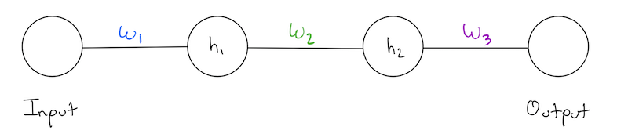
Note: This is sometimes confusing, as technically its the activations of the previous layer that “flow” into the next layer. However, the weights are what we are tying to learn, and their relative strengths tells us something about the structure of the network.
Each node has an associated: * weight * bias * activation function
In our example, we have \(w_1,b_1,w_2,b_2,w_3,b_3\) as our parameters and we are using the sigmoid as our activation function.
The function of each node, is to apply its own weight and bias to a previous layers activation value, and then pass it through its activation function to produce its own activation. For example, \(h_1\) is doing:
\[ a_1 = \sigma(w\cdot x + b) \]
The input to a nodes activation function is useful to think about separately, so we can introduce an additional variable to denote it as: \[ z_i = w\cdot x + b, \quad\quad a_1 = \sigma(z_i) \]
So, we can describe the behavior of each of our nodes as:
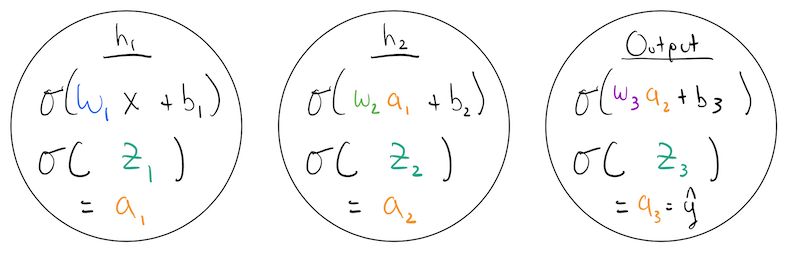
Implementation
Now we can actually implement this simple network. Lets start by recalling the sigmoid function:
def sigmoid(x):
return 1 / (1 + np.exp(-x))
plt.plot(np.linspace(-5,5),sigmoid(np.linspace(-5,5)));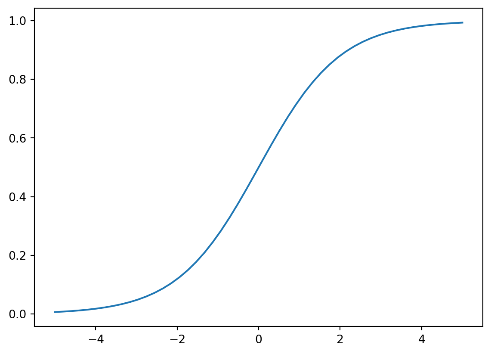
Lets define the function of a node, being careful to match our notation:
def node(w,b,a):
z = w*a + b
return sigmoid(z)Now we are ready to define our actual network! Lets initialize our random weights and biases:
w1,b1,w2,b2,w3,b3 = np.random.rand(6)Now, lets pick a training example and run it through our network:
input,label = inputs[0],labels[0]
# h1 node - operates on our input
a1 = node(w1,b1,input)
# h2 node - operates on a1
a2 = node(w2,b2,a1)
# output node - operates on a2 - produces our output
output = node(w3,b3,a2)
y_hat = outputLets see how we did!
print(f"for input: {input} with label: {label}, this network calculated: {y_hat}")for input: [-5.] with label: [-1], this network calculated: [0.75309071]As we know, to actually see how we did, we need to define a cost! Lets proceed with the usual average-MSE:
def mse(y_hat,y,average=True):
if average:
return np.mean((y_hat-y)**2)
else:
return ((y_hat-y)**2)def cost_mse(y_hat,y):
return 0.5*np.linalg.norm(y-y_hat)**2print(f"for input: {input} with label: {label}, this network calculated: {output}, giving us a cost of: {mse(output,label)}")for input: [-5.] with label: [-1], this network calculated: [0.75309071], giving us a cost of: 3.073327046232344Ok - so we’ve demonstrated the entire forward direction, for one sample. Lets define a function for this simple network, so we can run our entire training set through!
def simple_network(inputs):
outputs = []
N = inputs.shape[0]
# initialized weights
w1,b1,w2,b2,w3,b3 = np.random.rand(6)
for i in range(N):
input = inputs[i,:]
# h1 node
a1 = node(w1,b1,input)
# h2 node
a2 = node(w2,b2,a1)
# output node
output = node(w3,b3,a2)
# append to form output
outputs.append(output)
return np.asarray(outputs)We can now calculate our average loss over the entire training set:
mse(simple_network(inputs),labels)np.float64(1.5479591895616296)Multidimensional Network
We’ve looked at a very simple example above which captures the essence of what we are doing. However, our networks are really never actually composed of layers with one element each. Instead, each layer has multiple nodes.
Technically, we could continue in the same way as above and individually number our weights and biases but this quickly gets out of hand! As an exercise, try repeating the above analysis and implementation where each hidden layer is now of size 2!
Ironically, to avoid this notational complexity, it seems like we must introduce additional notation, and rewrite our problem in the language of linear algebra.
To introduce this notation, lets imagine a network the following structure:
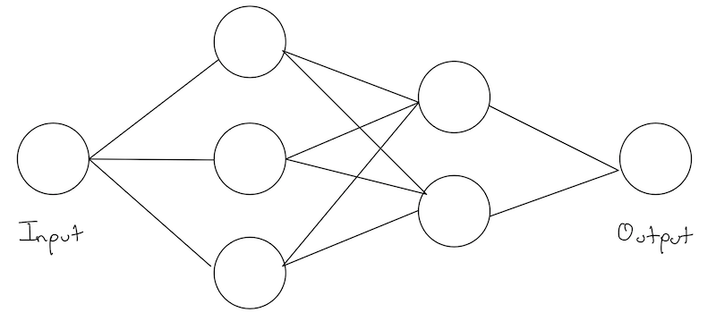
To make our analysis simpler, lets zoom in on node node, and all of its input weights:
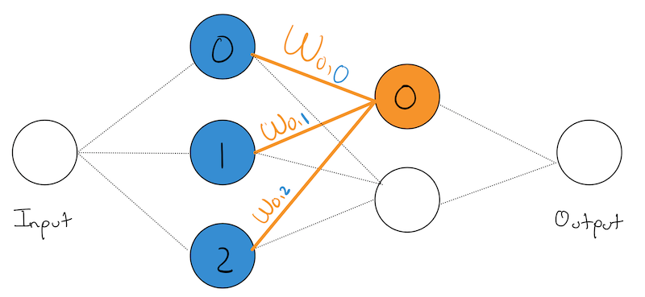
We’ve highlighted the 0th node in our last hidden layer and all of its inputs from the previous layer in \(\color{orange}{\text{orange}}\). We’ve also numbered each of it input nodes with their layer-specific numbering and shown them in \(\color{blue}{\text{blue}}\).
We’ve also named each weight according to the following format:
\[ w_{\;\color{orange}{\text{current node num.}} \;,\; \color{blue}{\text{incoming node num.}}} \]
This may seem a bit counter intuitive at first, as the tendency when reading from left to write is to want to write our weights as:
\[ w_{\;\color{blue}{\text{incoming node num.}} \;,\; \color{orange}{\text{current node num.}} } \]
You absolutely can, but that will result in a bunch of transposes in later equations. To get rid of them now, we will number our weights as we did above. As is typically the case, people make seemingly weird/arbitrary decisions at the front to result in simplifications down the line.
Recall, the function of a node is to apply its weight to the activation of its input/previous layer. In this case, we have three previous nodes/input nodes, so we will also write them in \(\color{blue}{\text{blue}}\) to make it clear that they are coming from the previous layer.
So our orange node is performing:
\[ \color{orange}{w}_{\color{orange}{0},\color{blue}{0}} \cdot \color{blue}{a_0} + \color{orange}{w}_{\color{orange}{0},\color{blue}{1}} \cdot \color{blue}{a_1} + \color{orange}{w}_{\color{orange}{0},\color{blue}{2}} \cdot \color{blue}{a_2} + \color{orange}{b_0} \]
Already, our eyes should be screaming dot-product!
Notation
Indeed, we can form a vector of the previous layer’s activations as:
\[ \color{blue}{\mathbf{a}_{prev}} = \begin{bmatrix} \color{blue}{a_0 \\ a_1 \\ a_2} \end{bmatrix} \]
and a vector of the 0-th neurons weights in the current layer as:
\[ \color{orange}{\mathbf{w}_0} = \begin{bmatrix} \color{orange}{w}_{\color{orange}{0},\color{blue}{0}} \\ \color{orange}{w}_{\color{orange}{0},\color{blue}{1}} \\ \color{orange}{w}_{\color{orange}{0},\color{blue}{2}} \end{bmatrix} \]
where we have used color again to make it clear what layer we are talking about: the current or previous layer.
Then we can rewrite what our orange node is calculating as: \[ \begin{align} \color{orange}{z_0} &= \color{orange}{\mathbf{w}_0} \cdot \color{blue}{\mathbf{a}_{prev}} + \color{orange}{b_0} \\ \color{orange}{a_0} &= \sigma(\color{orange}{z_0}) \end{align} \]
Well, we’ve managed to rewrite the activation of one-node in slightly better notation. But we can we do better! Lets now reason about the entire layer!
Recall, we already have a vector of the previous layer’s activations in \(\color{blue}{\mathbf{a}_{prev}}\), although we never actually gave a formula for it. Based on the formula for the 0th-node in the current layer we just gave, lets try to give a vector of activations for the entire current layer.
(Note: to prevent a color explosion, since we’re talking about the current layer, I will drop orange to refer to it most places. I will keep blue to refer to the previous layer).
To simplify our analysis, lets first note that: \[ \mathbf{a}_{curr} = \begin{bmatrix} \sigma (z_0) \\ \sigma (z_1) \\ \sigma (z_2) \\ \end{bmatrix} = \sigma\left(\; \begin{bmatrix} z_0 \\ z_1 \\ z_2 \\ \end{bmatrix}\; \right) = \sigma (\mathbf{z}_{curr}) \]
So, lets focus on writing a formula for the vector \(\mathbf{z}_{curr}\):
\[ \mathbf{z}_{curr} = \begin{bmatrix} \mathbf{w}_0 \cdot \color{blue}{\mathbf{a}_{prev}} + b_0 \\ \mathbf{w}_1 \cdot \color{blue}{\mathbf{a}_{prev}} + b_1 \\ \mathbf{w}_2 \cdot \color{blue}{\mathbf{a}_{prev}} + b_2 \\ \end{bmatrix} \]
Lets make it a bit clearer by writing our biases for the entire layer as a separate vector \(\mathbf{b}\):
\[ \mathbf{z}_{curr} = \begin{bmatrix} \mathbf{w}_0 \cdot \color{blue}{\mathbf{a}_{prev}} \\ \mathbf{w}_1 \cdot \color{blue}{\mathbf{a}_{prev}} \\ \mathbf{w}_2 \cdot \color{blue}{\mathbf{a}_{prev}} \\ \end{bmatrix} + \mathbf{b} \]
Just like we saw when we discussed linear regression, this vector of dot products is exactly the matrix-vector product of the weight matrix and the previous layers activation vector!
Definition: The current layers weight matrix: \(\mathbf{W}\) is a matrix of \(k\)-many rows, and \(j\)-many columns, where \(k\) is the number of nodes in the current layer, and \(j\) is the number of nodes in the previous layer:
\[ \mathbf{W} \in \mathbb{R}^{k,j}= \begin{bmatrix} \mathbf{w}_0^T \\ \mathbf{w}_1^T \\ \ldots \\ \mathbf{w}_k^T \end{bmatrix} = \begin{bmatrix} w_{0,0} & w_{0,1} & \ldots & w_{0,j} \\ \ldots \\ w_{k,0} & w_{0,1} & \ldots & w_{k,j} \\ \end{bmatrix} \]
Note: each row of the weight matrix represents all inputs to a specific node in the current layer.
Now, we can finally write a complete linear algebraic equation for the function of a current layer on a previous layer:
\[ \begin{align} \mathbf{z}_{curr} &= \mathbf{W}\color{blue}{\mathbf{a}_{prev}}+\mathbf{b} \\ \mathbf{a}_{curr} &= \sigma(\mathbf{z}_{curr}) \end{align} \]
Now, neural networks do this sequentially, so the last piece of the puzzle is to be able to refer to a specific layer by number. We now introduce the final piece of notation to let us do this: a superscript to designate the layer number:
The activation of layer \(L\) is given by:
\[ \begin{align} \mathbf{z}^L &= \mathbf{W}^L \mathbf{a}^{L-1}+\mathbf{b}^L \\ \mathbf{a}^L &= \sigma(\mathbf{z}^L) \end{align} \]
This is often written succinctly as:
\[ \boxed{\mathbf{a}^L = \sigma(\mathbf{W}\mathbf{a}^{L-1} + \mathbf{b})} \]
where the specific \(\mathbf{W},\mathbf{b}\) we are talking about is implied.
Wow we’ve come a long way! We’ve given a very clear and succinct linear algebraic equation for the entire forward direction for a network of any number of layers and size of each layer!
Lets perform a size sanity check: * \(\mathbf{W}\) is of size \(k \times j\), where \(j\) is the number of neurons in the previous layer. * \(\mathbf{a}^{L-1}\) is a vector of size \(j \times 1\), the activations of the previous layer. * Their multiplication results in a vector of size \(k \times 1\), where \(k\) is the number of neurons in the current layer. * Our bias vector is also \(k \times 1\) (as we expect!).
So everything works as expected!
This is why we decided to write our weight matrix to be of size \(k \times j\) or \(\text{num. neurons in prev layer} \times \text{num. neurons in current layer}\) instead of the other way around. If we had, we’d need a transpose in the equation above.
Implementation
Armed with our new notation, lets write an implementation of the network we gave above:
🧐Pause-and-ponder: What should the sizes of each \(W\) be for this network? Lets go through it together!
Ok! Now lets implement it!
inputs,labels = toy()def simple_network2(inputs):
outputs = []
N = inputs.shape[0]
# initialize weight matrices - notice the dimensions
W_1 = np.random.randn(3,1)
W_2 = np.random.randn(2,3)
W_3 = np.random.randn(1,2)
# and our biases
b_1 = np.random.randn(3,1)
b_2 = np.random.randn(2,1)
b_3 = np.random.randn(1,1)
# loop through training data
for i in range(N):
# correct size for current input
input = inputs[i,:]
# layer 1
a_1 = sigmoid(W_1*input + b_1)
# layer 2
a_2 = sigmoid(W_2.dot(a_1)+b_2)
# output layer
output = sigmoid(W_3.dot(a_2)+b_3)
# append to form output
outputs.append(output)
return np.squeeze(np.asarray(outputs)).reshape(-1,1)outputs = simple_network2(inputs)
plt.scatter(inputs,outputs,c=labels);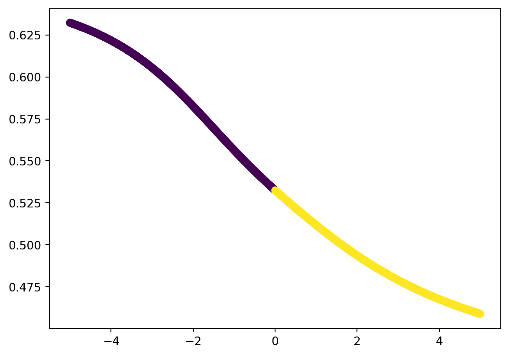
Mini-Batch Notation
Note, this implementation runs an example through the network one-by-one! Instead, we can imagine feeding our entire dataset through at once! This formalism will pave the way for us later to feed in a mini-batch at a time.
Lets just reason our way through this one from first-principles (fancy way to say: lets match our matrix sizes!), seeing how we get our entire dataset through the first hidden layer.
The first weight matrix is of size:
\[ \mathbf{W}_1: (\text{size of hidden layer} \times \text{dimension of input}) \]
which in this case is: \(3 \times 1\). If our input was 2-D, it would be \(3 \times 2\). So what we dot it with, needs to be of size: \(\text{dimension of input} \times \text{??}\).
Its in that dimension that we can place our entire dataset!
So, now we’re going to be shuffling activation matrices around! In these activation matrices, each column is an activation for the last layer on a different training example!
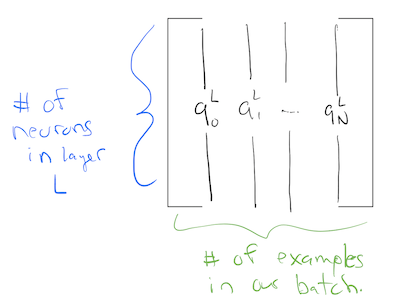
So we expect the first activation matrix to be of size: \(\text{dimension of input} \times \text{number of samples}\). This means this must also be the size of the initial input matrix for the first hidden layer.
So, we can rewrite our layer propagation equation above for our entire dataset:
\[ \boxed{\mathbf{A}^L = \sigma(\mathbf{W}\mathbf{A}^{L-1} + \mathbf{b})} \]
where we use broadcasting rules to let us add a vector \(\mathbf{b}\) to a matrix.
Lets make a special note about the first hidden layer, and how it processes our input matrix.
Typically, we imagine our data matrix such that the first dimension is the batch_size:
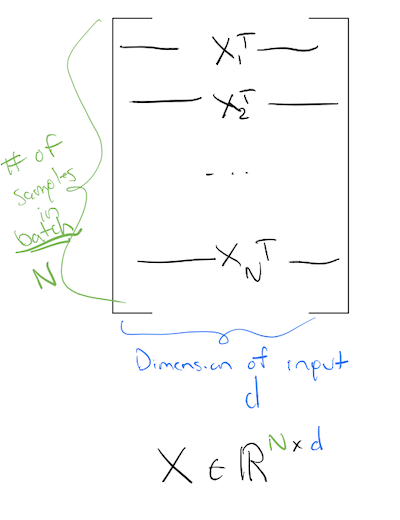
This means each row of this matrix, corresponds to one sample.
So if our data matrix is of size \(\text{batch\_size} \times \text{dimension}\), in order for our first layer to calculate correctly, we have to make the sizes work! Meaning, our first layer should be:
\[ \mathbf{A}^1 = \sigma(\mathbf{W}^1\mathbf{X}^T + \mathbf{b}) \]
where \(X^T\) is:
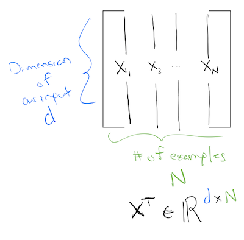
Note: Here we define the input matrix \(X\) to be of size: \(N \times d\). That is why we transpose it in the first layer. This is by no means universal, and different numerical libraries do it differently. You might come across libraries or papers to talks, where the input matrix is defined to be of size \(d \times N\). If that is the case, the first layer does not need an \(X^T\)!
Now we can implement this simple network, using this notation!
def simple_network2_batch(inputs):
# assume inputs is of shape Nxd
# initialize weight matrices - notice the dimensions
W_1 = np.random.randn(3,1)
W_2 = np.random.randn(2,3)
W_3 = np.random.randn(1,2)
# and our biases
b_1 = np.random.randn(3,1)
b_2 = np.random.randn(2,1)
b_3 = np.random.randn(1,1)
# NOTE - there is no for loop here!
# layer 1
a_1 = sigmoid(W_1.dot(X.T) + b_1)
# layer 2
a_2 = sigmoid(W_2.dot(a_1)+b_2)
# output layer
output = sigmoid(W_3.dot(a_2)+b_3)
return np.squeeze(np.asarray(outputs)).reshape(-1,1)Now lets actually run our entire dataset through (since we aren’t yet dealing with batches), to generate outputs:
inputs,labels = toy()
y_hat = outputs = simple_network2(inputs)Just for fun, lets plot it!
fig,(ax1,ax2) = plt.subplots(1,2,figsize=(15,7))
ax1.set_title('Original poits and labels')
ax1.scatter(inputs,labels);
ax1.set_title('Original poits and Y_Hat')
ax2.scatter(inputs,outputs,color='orange');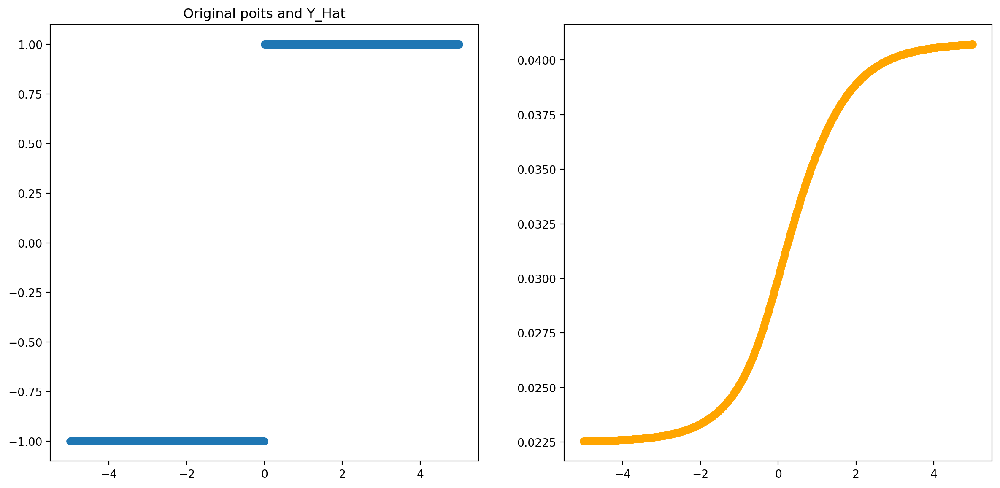
Note the huge difference in our y-axis! This is without and training so its bound to be bad!
Pause-and-ponder: Go back and re run the network above and re-plot the final representation. Notice how random it is! This is because we initialize with random weights, but never actually do any training!
Dealing with Biases
Another very common notational trick people do, as we saw in linear regression, was to add “another dimension” to “automatically” deal with our bias.
Here, that means adding another “node” to each layer. This node has no input, only outputs, and its activation is always the value 1.
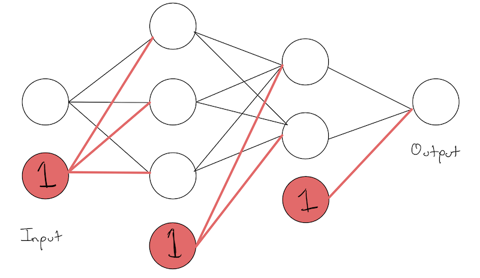
Question: How does this act as a bias?
Well, lets look at what this means for a particular node. Lets once again highlight the orange node:
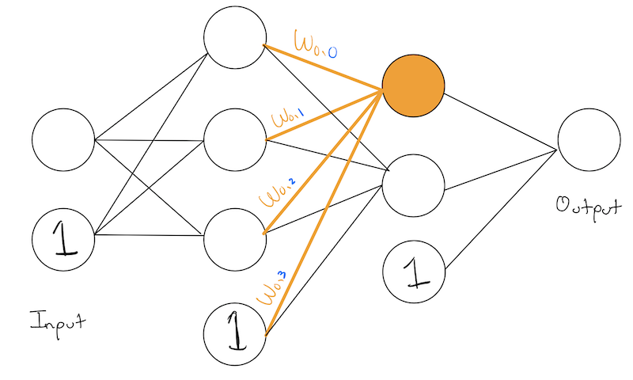
What effect does this have for this orange nodes update? Well, lets write out what it is:
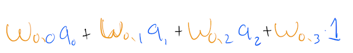
So, \(\color{orange}{w}_{\color{orange}{0},\color{blue}{3}}\) is always being multiplied by the value \(1\). This is exactly the role of the bias!
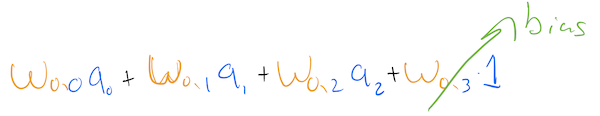
As we can see, the addition of a constant node in a layer gives an extra weight to each node in the next layer. This weight, multiplied by 1, acts as the bias for each node.
So all we have to do, is add an extra column to each weight matrix in our network. (Note: often, this bias is omitted from the final layer).
Now, for a layer \(L\), the weight matrix is of size: \(k \times j+1\), where \(k\) is the number of actual/real hidden nodes in layer \(L\), and \(j\) is the number of actual/real hidden nodes in layer \(L-1\).
Note: often this is drawn with the bias nodes on top of the others, not below.
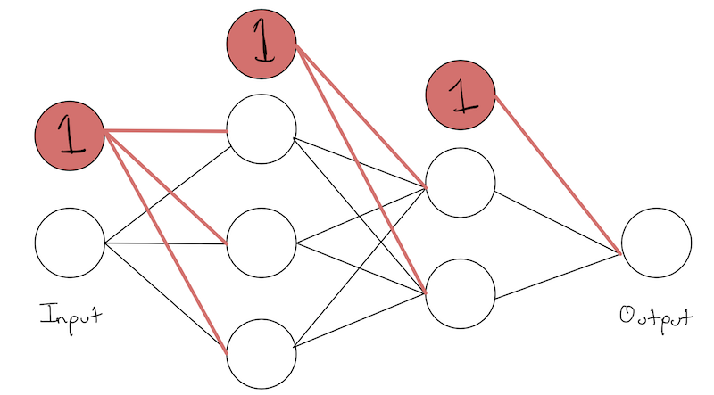
So we would think of the 0-th weight acting as the bias, so we would add an extra column to the left/right of each weight matrix. Its ultimately the same thing
As a sanity check that this works, lets compare the output of the previous implementation with this new notation. To do so, we need to make sure they use the same initialization. Lets take it out of the function and “make it flat” so we can easily compare:
# W and b network
# initialize weight matrices - notice the dimensions
W_1 = np.random.randn(3,1)
W_2 = np.random.randn(2,3)
W_3 = np.random.randn(1,2)
# and our biases
b_1 = np.random.randn(3,1)
b_2 = np.random.randn(2,1)
b_3 = np.random.randn(1,1)# W network - adding biases to the right:
W_1_b = np.hstack((W_1,b_1))
W_2_b = np.hstack((W_2,b_2))
W_3_b = np.hstack((W_3,b_3))Lets run the “old network” notation:
# layer 1
a_1_old = sigmoid(W_1.dot(inputs.T) + b_1)
# layer 2
a_2_old = sigmoid(W_2.dot(a_1_old)+b_2)
# output layer
output_old = sigmoid(W_3.dot(a_2_old)+b_3)
output_old = np.squeeze(np.asarray(output_old)).reshape(-1,1)And now the “new” network notation. Note: in order to run the inputs through, we need to add the “extra dimension of 1’s”, as we’ve done many times before!
inputs_new = np.c_[inputs,np.ones(inputs.shape[0])]Now we can go ahead and “feed it in”
# layer 1
a_1_new = sigmoid(W_1_b.dot(inputs_new.T))
# append the 1 to the end of the previous layers activations:
a_1_new = np.r_[a_1_new, np.ones((1,a_1_new.shape[1]))]
# layer 2
a_2_new = sigmoid(W_2_b.dot(a_1_new))
# append the 1 to the end of the previous layers activations:
a_2_new = np.r_[a_2_new, np.ones((1,a_2_new.shape[1]))]
# output layer
output_new = sigmoid(W_3_b.dot(a_2_new))
output_new = np.squeeze(np.asarray(output_new)).reshape(-1,1)Lets verify they are both equal:
np.equal(output_new,output_old).all()np.False_Note: This might seem like a strange hack - We have to reshape each layers weight matrix, and each layers activation matrix to account for this extra “1” flying around everywhere.
I will not try to convince you one way or the other which makes the most sense. I’m just explaining it here in case it is useful to you to think of the bias as “being wrapped up” in our weight matrix, as it was when we discussed linear regression.
Moving forward, we will not be using this notation in the rest of the notebook.
Activation Functions
Lets imagine revisiting the previous network structure under different activation functions:
Linear
Lets start with a linear activation function:
def linear(z):
return zThis is almost always called a linear activation, but is better thought of as the identity activation - that is, it just returns what it was given, unaltered.
What does this mean for the computation our network can perform?
Once again, lets flatten our implementation to take a look:
inputs,labels = toy()# initialize weight matrices - notice the dimensions
W_1 = np.random.randn(3,1)
W_2 = np.random.randn(2,3)
W_3 = np.random.randn(1,2)
# and our biases
b_1 = np.random.randn(3,1)
b_2 = np.random.randn(2,1)
b_3 = np.random.randn(1,1)# layer 1
a_1 = linear(W_1.dot(inputs.T) + b_1)
# layer 2
a_2 = linear(W_2.dot(a_1)+b_2)
# output layer
outputs = linear(W_3.dot(a_2)+b_3)
outputs = np.squeeze(np.asarray(outputs)).reshape(-1,1)Lets plot it:
fig,(ax1,ax2) = plt.subplots(1,2,figsize=(15,7))
ax1.set_title('Original poits and labels')
ax1.scatter(inputs,labels);
ax1.set_title('Original poits and Y_Hat')
ax2.scatter(inputs,outputs,color='orange');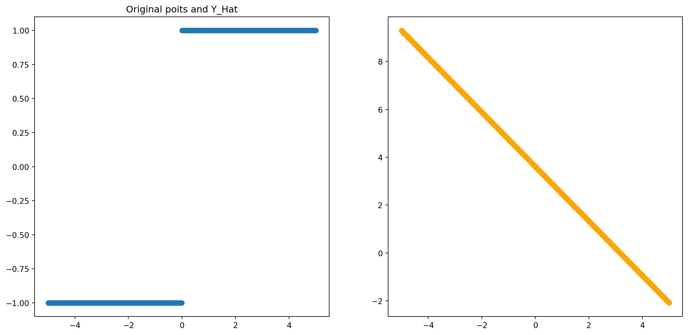
🧐 Pause-and-ponder: Go back and re-run the above a few times. What does this mean?
Remember, what we are visualizing is the inputs and the corresponding output value - what our network has been able to map to.
You might be noticing that this is strangely linear! Indeed! With linear activation functions, all we are able to do is calculate some linear combination of our inputs!
Lets dig in a bit more, and show what we are actually calculating at Layer \(L\):
\[ A^L = W_3((W_2(W_1X^T + b_1) + b_2) + b_3 \]
Well, lets distribute this out: \[ A^L = W_3W_2W_1X^T + W_3W_2b_1 + W_3b_2 + b_3 \]
Ok, wait a second… this is getting confusing - lets check to make sure the sizes work out!
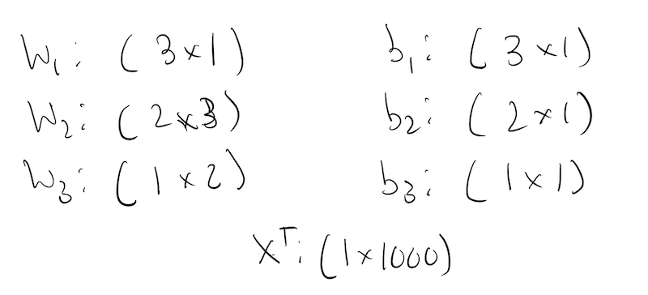
Lets go through this part together in class!
Ok! We can see that the sizes do in fact work out!
🧐Pause-and-ponder: In your resulting equation, perform some clarifying substitutions. What do we discover?
After some substitutions, we can write an equation like the following:
\[ \hat{\mathbf{Y}} = \mathbf{W}^*X^T + \mathbf{b}^* \]
Which tells us that a NN with only linear activations, is ultimately just another linear function of its inputs! It doesn’t matter how deep or wide it is!
A Final Sigmoid
Given our understanding above, what would happen if we only add a sigmoid at the end? Something like:
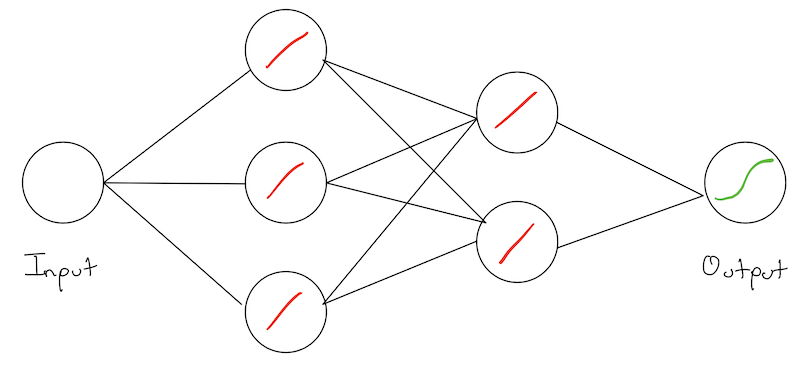
🧐Pause-and-ponder: What do you think it represents? What is its representational capacity?
Backprop
Now that we have a good idea about forward propagation we’re ready to learn by backpropagating an error signal through the network, allowing us to attribute “blame”/“error” to each specific weight/bias in our network.
In other words, one way to think of what the result of backprop is as a large vector which tells us which parameters are the most responsible for our error - or phrased another way - which ones we should change, and by how much, and in what direction, in order to get the biggest reduction of our error.
Latex definitions
This cell just creates some latex definitions we will need later.
\[ \newcommand{\bx}[1]{\color{purple}{b^{#1}}} \newcommand{\bl}{\color{purple}{b^L}} \newcommand{\wx}[1]{\color{blue}{w^{#1}}} \newcommand{\wl}{\color{blue}{w^L}} \newcommand{\wone}{\color{blue}{w_1}} \newcommand{\ax}[1]{\color{green}{a^{#1}}} \newcommand{\al}{\color{green}{a^L}} \newcommand{\zx}[1]{\color{orange}{z^{#1}}} \newcommand{\zl}{\color{orange}{z^L}} \newcommand{\ap}{\color{green}{a^{L-1}}} \newcommand{\czero}{\color{red}{C_0}} \newcommand{\dc}{\color{red}{\partial C_0}} \newcommand{\dw}[1]{\color{blue}{\partial \wx{#1}}} \newcommand{\dz}[1]{\color{orange}{\partial \zx{#1}}} \newcommand{\da}[1]{\color{green}{\partial \ax{#1}}} \newcommand{\db}[1]{\color{purple}{\partial \bx{#1}}} \newcommand{\dap}{\color{green}{\partial \ax{L-1}}} \newcommand{\dcdw}[1]{\frac{\dc}{\dw{#1}}} \newcommand{\dcdz}[1]{\frac{\dc}{\dz{#1}}} \newcommand{\dzdb}[1]{\frac{\dz{#1}}{\db{#1}}} \newcommand{\dzdw}[1]{\frac{\dz{#1}}{\dw{#1}}} \newcommand{\dadz}[1]{\frac{\da{#1}}{\dz{#1}}} \newcommand{\dcda}[1]{\frac{\dc}{\da{#1}}} \newcommand{\dcdb}[1]{\frac{\dc}{\db{#1}}} \newcommand{\dcdap}{\frac{\dc}{\dap}} \newcommand{\deltal}{\delta^L} \newcommand{\deltax}[1]{\delta^{#1}} \]
Note: Make sure you run this cell!
1-D Case
Note: This presentation follows very closely these two fantastic resources * 3blue1brown - Backpropagation calculus * Michael Nielsen - Neural Networks and Deep Learning - Chapter 2
Lets revisit the simplest network we started with at the beginning of this notebook:
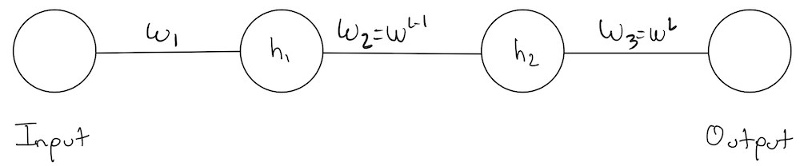
Notation Note: we’re introducing a new notation \(\color{blue}{w_3 = w^L, w_2 = w^{L-1}}, \ldots\) and we will be using them interchangeably.
To focus our discussion, lets just focus on the last two levels, and label their activation values:
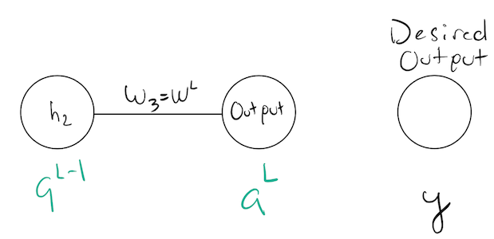
The output layer defines the “representation” our network has created for a specific input:
\[ \begin{align} \zl &= \wl\ap+\bl \\ \al &= \sigma(\zl) \end{align} \]
Where now we are using color to denote the kind of variable we are talking about. For example, activations for any layer are green.
So, its with this layers activation that we want to measure our cost, on a specific example \(x_0\) run through our network:
\[ \czero = (\al - y)^2 \]
Another way to think about this process, is as this computational graph:
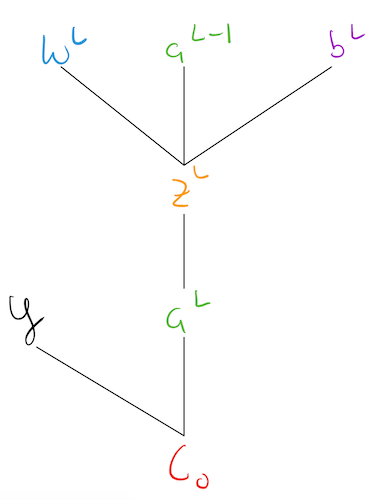
This tells a “causal” story, about what variables are needed to compute other variables. Note: this could be carried even further back through the network, all the way to the inputs!
Note: This is a “light weight”/conceptual computational graph. Its a way to introduce the concept of backpropagating partial derivatives through a graph using the chain rule.
Lets try to understand exactly what a “partial derivative” like \(\dcdw{L}\) is telling us, by associating a little number line with each of these variables:
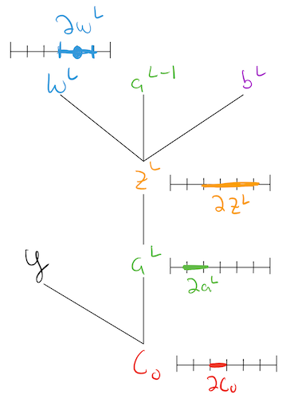
Pictorially, this is telling us that a little nudge to a weight, results in a nudge to the “activity”/\(\zl\) of the neuron (Q: how big/how small of a nudge?), which then results in a nudge to the activation/\(\al\) of the neuron (Q: how big/how small of a nudge?) which then results in a nudge to the total cost of the network (how big/how small of a nudge?).
So conceptually, the partial \(\dcdw{L}\) is capturing:
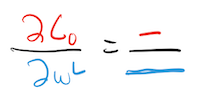
Simulation
We actually go ahead and simulate this to better understand what its telling us! Lets start by running an example through our network:
inputs,outputs = toy()
input,output = inputs[0],outputs[0]# initialize weights
w_1 = np.random.randn()
w_2 = np.random.randn()
w_3 = 1 #exagerating for plotting purposes
# and our biases
b_1 = np.random.randn()
b_2 = np.random.randn()
b_3 = np.random.randn()
# layer 1
z_1 = w_1*input+b_1
a_1 = sigmoid(z_1)
# layer 2
z_2 = w_2*a_1+b_2
a_2 = sigmoid(z_2)
# output layer
z_3 = w_3*a_2+b_3
a_3 = sigmoid(z_3)cost_0 = (output - a_3)**2Nudge \(\color{blue}{w^L}\)
Now lets give \(\wl\) a “little nudge”, and see how it propagates through the network!
Note: This is not really a little nudge. Ive greatly exaggerated it to provide a good looking plot.
nudge = np.linspace(-5,5,51)
z_3_nudged = (w_3 + nudge)*a_2 + b_3
a_3_nudged = sigmoid(z_3_nudged)
cost_0_nudged = (a_3_nudged - output)**2Lets plot it!
fig, (ax1,ax2,ax3) = plt.subplots(1,3,figsize=(20,7),sharex=True)
ax1.plot(w_3+nudge,z_3_nudged,c="orange");
ax1.scatter(w_3,w_3*a_2+b_3,s=100,c='orange');
ax1.set_xlabel('w_3 + nudge');
ax1.set_ylabel('z_3');
ax1.set_title("How a nudge in w_3 affects z_3")
ax2.plot(w_3+nudge, a_3_nudged,c='green');
ax2.scatter(w_3,sigmoid(w_3*a_2+b_3),s=100,c='green');
ax2.set_xlabel('w_3 + nudge');
ax2.set_ylabel('a_3');
ax2.set_title("How a nudge in a_3 affects z_3")
ax3.plot(w_3+nudge, cost_0_nudged,c='red');
ax3.scatter(w_3,(sigmoid(w_3*a_2+b_3)-output)**2,s=100,c='red');
ax3.set_xlabel('w_3 + nudge');
ax3.set_ylabel('C_0');
ax3.set_title("How a nudge in w_3 affects C_0");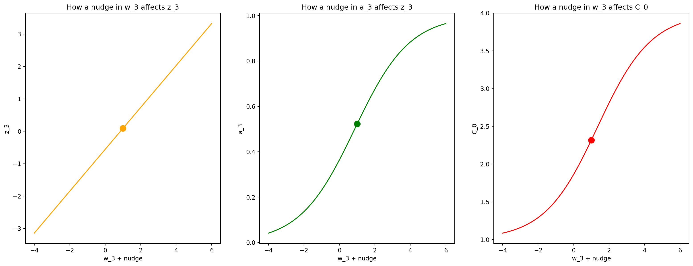
What is this telling us? That a little nudge in \(w_3\) results in very different changes to each the variables down our computational graph!
Nudge \(\color{blue}{w_1}\)
Lets repeat this simulation, except go more back/backer to see how a nudge at \(w_1\) affects our output layer and our cost!
nudge = np.linspace(-5,5,51)
z_1_nudged = (w_1 + nudge)*input + b_1
a_1_nudged = sigmoid(z_1_nudged)
z_2_nudged = w_2*a_1_nudged + b_2
a_2_nudged = sigmoid(z_2_nudged)
z_3_nudged = w_3*a_2_nudged + b_3
a_3_nudged = sigmoid(z_3_nudged)
cost_0_nudged = (a_3_nudged - output)**2Plot it!
fig, (ax1,ax2,ax3) = plt.subplots(1,3,figsize=(20,7),sharex=True)
ax1.plot(w_1+nudge,z_1_nudged,c="orange");
ax1.scatter(w_1,w_1*input+b_1,s=100,c='orange');
ax1.set_xlabel('W+nudge');
ax1.set_ylabel('z_1');
ax1.set_title("How a nudge in w_1 affects z_1")
ax2.plot(w_1+nudge, a_3_nudged,c='green');
ax2.scatter(w_1,sigmoid(w_3*(sigmoid(w_2*sigmoid(w_1*input+b_1)+b_2))+b_3),s=100,c='green');
ax2.set_xlabel('W+nudge');
ax2.set_ylabel('a_3');
ax2.set_title("How a nudge in w_1 affects a_3")
ax3.plot(w_1+nudge, cost_0_nudged,c='red');
ax3.scatter(w_1,(sigmoid(w_3*(sigmoid(w_2*sigmoid(w_1*input+b_1)+b_2))+b_3)-output)**2,s=100,c='red');
ax3.set_xlabel('W+nudge');
ax3.set_ylabel('C_0');
ax3.set_title("How a nudge in w_1 affects our cost");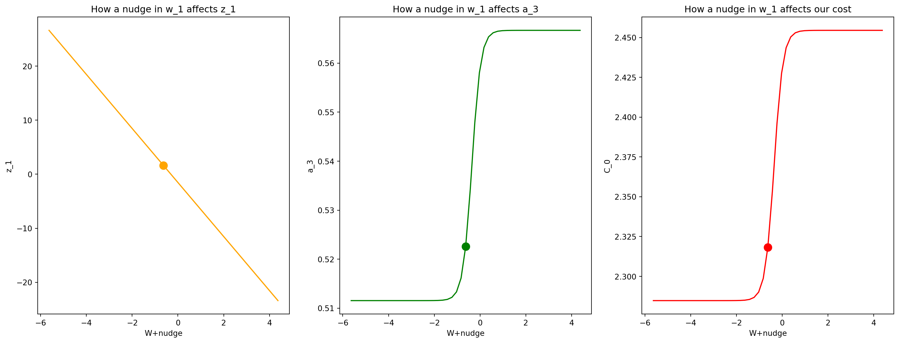
Ah, these graphs have are a bit more interesting, so we can point out the following:
Implicit in all of these graphs are the following idea:
\[ \frac{\text{the amount of change in a dependent variable}}{\text{the amount of change in a variable that it depends on}} \]
Well, this is just the rate of change of the graph! Which we might remember! Lets restate this idea for each subplot:
The specific rate of change for the first subplot is:
\[ \frac{\text{resulting change in }\color{orange}{z_1}}{\text{some amount of change in } \color{blue}{w_1}} = \frac{\color{orange}{\Delta z_1}}{\color{blue}{\Delta w_1}} \]
The specific rate of change for the second subplot is:
\[ \frac{\text{resulting change in }\color{green}{a_3}}{\text{some amount of change in } \color{blue}{w_1}} = \frac{\color{green}{\Delta a_3}}{\color{blue}{\Delta w_1}} \]
The specific rate of change for the third subplot is:
\[ \frac{\text{resulting change in } \color{red}{C_0}}{\text{some amount of change in } \color{blue}{w_1}} = \frac{\color{red}{\Delta C_0}}{\color{blue}{\Delta w_1}} \]
Aha! That last subplot is telling us something about how sensitive the cost \(\czero\) is to changes in \(\wone\). This is what we want!
We can see that a little change to \(\wone\) to the left/right (depends on random vals), results in a big change to our final cost on this example!
This rate of change/derivative tells us the direction we need to change \(\wone\) in order to reduce our costs!
We could do better
Now, from the plotting code for the last subplot up there you might notice that to generate that last subplot, we basically had to run the entire nudged \(\wone + \Delta\) all the way through our entire network!
We are also reasoning about the derivative by looking at a graph, instead of actually calculating it so that we can use it.
Lets see if we can think of a clever scheme of actually calculating our partials with respect to our weights: \(\ldots,\dcdw{L-1},\dcdw{L}\), by starting with
\[ \dcdw{L} = ? \]
Lets bring back our computational graph:
Lets use the following idea to decompose our graph starting from the end/bottom:
\[ \frac{\text{the amount of change in a dependent variable}}{\text{the amount of change in a variable that it depends on}} \]
Starting at \(\czero\), we have:
\[ \dcda{L} \]
This object tells us how the cost changes with respect to the final layers activation. Lets calculate it:
\[ \begin{align} \czero &= (\al - y)^2 \\ \dcda{L} &= 2(\al -y) \end{align} \]
What happens if \(\al\) is small? Well then it contributes less to our error!
So we should focus on making sure that when \(\al\) is large, its correct!
🧐Pause-and-ponder: What about \(\frac{\czero}{\partial y}\) ? What can we say about this?
According to our computational graph, thats all of the immediate “independent” variables \(\czero\) has. So lets now switch our focus to \(\al\):
\[ \begin{align} \al &= \sigma (\zl) \\ \dadz{L} &= \sigma ^{\color{red}{\prime}}(\zl) \end{align} \]
where \(\sigma^{\color{red}{\prime}}(\cdot)\) is the derivative of our sigmoid activation function:
\[ \sigma^{\color{red}{\prime}}(\cdot) = \sigma(\cdot)(1-\sigma(\cdot)) \]
This lets us rewrite the above as:
\[ \begin{align} \dadz{L} &= \sigma(\zl)(1-\sigma(\zl)) \end{align} \]
We now have the following partials:
\[ \begin{align} \dcda{L} &: \text{how changing } \al \text{ changes } \czero \\ \\ \dadz{L} &: \text{how changing } \zl \text{ changes } \al \end{align} \]
It shouldn’t require too much convincing that we can multiply these two objects together to create a new partial:
\[ \begin{align} \dcda{L} \cdot \dadz{L} &= \dcdz{L} \\ &= \text{how changing } \zl \text{ changes } \czero \end{align} \]
Indeed, the notation itself suggests this by allowing us to “cancel out” partials that appear on top and on bottom:
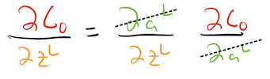
The last step is to actually write this out to get an expression for \(\dcdz{L}\):
\[ \begin{align} \dcdz{L} &= \dadz{L} \cdot \dcda{L} \\ &= \underbrace{\sigma(\zl)(1-\sigma(\zl))}_{\text{how changing }\zl\text{ affects }\al} \cdot \underbrace{2(\al -y)}_{\text{how changing }\al\text{ affects }\czero} \end{align} \]
🧐Pause-and-ponder: We have just discovered and applied the chain rule! We have used it to backpropagate a change at the output of our last layer: \(\dcda{L}\), to a change at the input of the activation function of our last layer: \(\dadz{L}\).
📖Semi-Definition: Backpropagation can be thought of as applying the chain rule back across our computational graph!
Lets keep going!
So far we’ve backpropagated once. Lets look at our map so far:
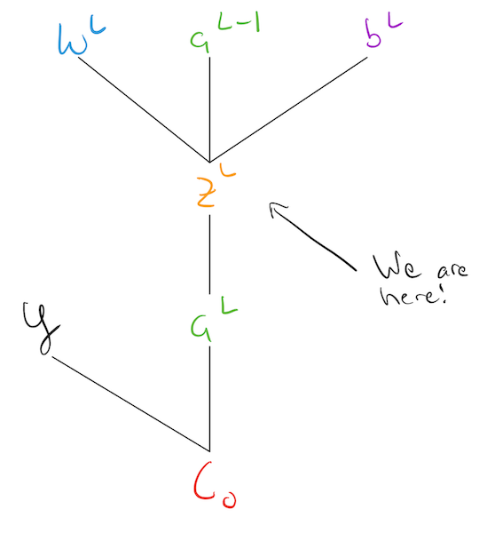
Lets keep backpropagating (chain-ruling)! We can now look at the inputs \(\zl\) has. Lets focus on one of the most interesting for right now, \(\wl\):
\[ \begin{align} \zl &= \wl\ax{L-1}+\bl \\ \dzdw{L} &= \ax{L-1} \end{align} \]
🧐Pause-and-ponder: This derivative has a particularly interesting interpretation. Its saying that the amount a nudge to our weight in the last layer influences the “activity” of the last layer, depends on how strong the previous neuron was firing! In other words, if the previous neuron was very active, even a small nudge could cause big changes! But if the previous neuron was always low activation/low firing, then this weight doesn’t really matter!
Note: This observation is often stated as:
- “Neurons that fire together, wire together”,
- “Weights between low activation neurons learn very slowly”
With this, we can chain it together with our other partials to write an expression for \(\dcdw{L}\):
\[ \begin{align} \dcdw{L} &= \dzdw{L}\dcdz{L}\\ \\ &= \dzdw{L}\dadz{L}\dcda{L} \\ \\ &= \underbrace{\ax{L-1}}_{\text{how changing }\wl\text{ affects } \zl} \quad \underbrace{\sigma(\zl)(1-\sigma(\zl))}_{\text{how changing }\zl\text{ affects }\al} \quad \underbrace{2(\al -y)}_{\text{how changing }\al\text{ affects }\czero} \end{align} \]
Or simply:
\[ \begin{align} \dcdw{L} &= \dzdw{L}\dadz{L}\dcda{L} \\ &= \left(\ax{L-1}\right) \left(\sigma(\zl)(1-\sigma(\zl))\right) \left(2(\al -y)\right) \end{align} \]
🧐Pause-and-ponder: From here, can you guess the appropriate equation for \(\dcdb{L}\)?
Hint:
\[ \frac{\dc}{?} = \frac{\dz{L}}{?}\dadz{L}\dcda{L} \]
Wow! We’ve come a long way! We finally have an actual expression for how a change to one of our weights (\(\wl\)) causes a change to our cost for a single example.
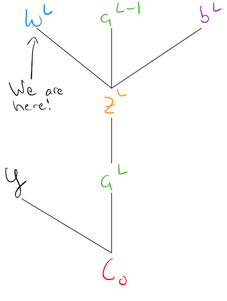
Lets finish up by using the hint I gave above
\[ \frac{\dc}{?} = \frac{\dz{L}}{?}\dadz{L}\dcda{L} \]
to find an expression for how the cost changes with respect to the previous layers activity \(\dcda{L-1}\):
\[ \dcda{L-1} = \underbrace{\frac{\dz{L}}{\da{L-1}}}_{\text{need to calculate}}\underbrace{\dadz{L}\dcda{L}}_{\text{already have this}} \]
So all we need is an expression for \(\frac{\dz{L}}{\da{L-1}}\):
\[ \begin{align} \zl &= \wl\ax{L-1}+\bl \\ \frac{\dz{L}}{\da{L-1}} &= \wl \end{align} \]
Letting us write:
\[ \dcda{L-1} = \left(\wl\right) \left(\sigma(\zl)(1-\sigma(\zl))\right) \left(2(\al -y)\right) \]
For completion, and as an answer to a previous pause-and-ponder, lets write out the expression for \(\dcdb{L}\):
\[ \dcdb{L} = \dzdb{L}\dadz{L}\dcda{L} \]
We can get an expression for \(\dzdb{L}\):
\[ \begin{align} \zl &= \wl\ax{L-1}+\bl \\ \dzdb{L} &= 1 \end{align} \]
And so \[ \begin{align} \dcdb{L} &= 1\cdot\dadz{L}\dcda{L}\\ &= \left(\sigma(\zl)(1-\sigma(\zl))\right) \left(2(\al -y)\right) \end{align} \]
Lets group this level all together to write all partials for this level:
\[ \begin{align} \dcdw{L} &= \left(\ax{L-1}\right) &&\cdot&\left(\sigma(\zl)(1-\sigma(\zl))\right) \left(2(\al -y)\right) \\ \dcdb{L} &= 1 &&\cdot&\left(\sigma(\zl)(1-\sigma(\zl))\right) \left(2(\al -y)\right) \\ \dcda{L-1} &=\left(\wl\right) &&\cdot&\left(\sigma(\zl)(1-\sigma(\zl))\right) \left(2(\al -y)\right) \end{align} \]
Speaking of Error…
Aha! We can notice they all have something in common:
\[ \dcdz{L}=\dadz{L}\dcda{L} \]
Definition: The error associated with layer \(L\) is given by:
\[ \deltal = \dcdz{L}=\dadz{L}\dcda{L} \]
often stated simply as:
\[ \deltal = \dcdz{L} \]
and completely as:
\[ \begin{align} \deltal &= \sigma(\zl)(1-\sigma(\zl)) (\al -y) \\ &= \sigma^{\color{red}{\prime}}(\zl) (\al-y) \end{align} \]
Note: We’ve discarded that \(2\) from the cost as is often done.
🧐Pause-and-ponder: Why is this called the error?
This lets rewrite our partials as:
\[ \begin{align} \dcdw{L} &= \ax{L-1} \deltal \\ \dcdb{L} &= \deltal \\ \dcda{L-1} &= \wl \deltal \end{align} \]
What about the rest?
And thats it! We’ve finally finished out how our cost function changes with respect to one layer: \(L\). But we’ve only done one layer! Not to worry! We’ve discovered backpropagation and the chain rule! So the rest is easy!
Lets look at our map
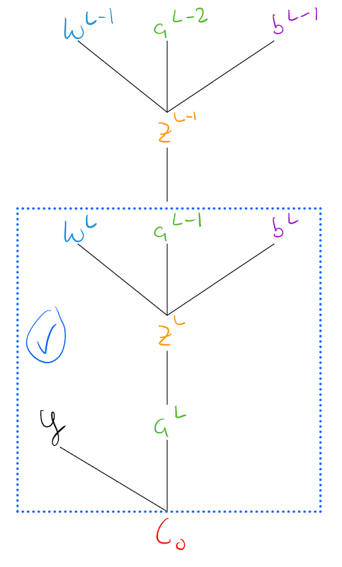
We’ve boxed in what we know how to do so far. This also tells us its very straight forward to now give the equations for layer \(L-1\):
\[ \begin{align} \dcdw{L-1} &= \dzdw{L-1} \dadz{L-1} \dcda{L-1} \\ \dcdb{L-1} &= \dzdb{L-1} \dadz{L-1} \dcda{L-1} \\ \dcda{L-2} &= \frac{\dz{L-1}}{\da{L-2}} \dadz{L-1} \dcda{L-1} \end{align} \]
Fully recursive definition
Wow! We again see they have something in common!
Definition: The error for layer \(L-1\) is:
\[ \deltax{L-1} = \dcdz{L-1}=\dadz{L-1}\dcda{L-1} \]
often stated simply as:
\[ \deltax{L-1} = \dcdz{L-1} \]
We can now restate the above as:
\[ \begin{align} \dcdw{L-1} &= \ax{L-2} \deltax{L-1} \\ \dcdb{L-1} &= \deltax{L-1} \\ \dcda{L-2} &= \wx{L-1} \deltax{L-1} \end{align} \]
That is a recursive definition that serves for the rest of the graph!
But wait…
Theres more! Lets bring back the definitions of error for layer \(L-1\), and the partials for layer \(L\):
Partials at layer \(L\):
\[ \begin{align} \dcdw{L} &= \ax{L-1} \deltal \\ \dcdb{L} &= \deltal \\ \dcda{L-1} &= \wl \deltal \end{align} \]
Error at layer \(L-1\):
\[ \deltax{L-1} = \dcdz{L-1}=\dadz{L-1}\dcda{L-1} \]
Aha! We see something in common again!
\[ \boxed{\dcda{L-1} = \wl \deltal} \]
\[ \deltax{L-1} = \dcdz{L-1}=\dadz{L-1}\boxed{\dcda{L-1}} \]
Lets sub that in and write:
\[ \deltax{L-1} = \dcdz{L-1}=\dadz{L-1}\wl \deltal \]
We’ve discovered another major equation!:
📖 Definition: The error at any layer \(L-1\) can be written as a function of the next layer \(L\):
\[ \deltax{L-1} = \wl \deltal \cdot \sigma^{\color{red}{\prime}}(\zx{L-1}) \]
For example, for layer \(L-2\):
\[ \begin{align} \deltax{L-2} &= \wx{L-1}\deltax{L-1}\sigma^{\color{red}{\prime}}(\zx{L-2}) \\ &= \wx{L-1}\left[ \wl \deltal \cdot \sigma^{\color{red}{\prime}}(\zx{L-1}) \right]\sigma^{\color{red}{\prime}}(\zx{L-2}) \end{align} \]
The Four Fundamental Backpropagation Equations™
We did it! We’ve completed backprop on this simple 1D network!
Lets cap this off by rewriting scalar versions of the four fundamental backpropagation equations:
📖Definition: Scalar versions of the Four Fundamental Backpropagation Equations™ are given by:
\[ \begin{align} \delta^L &= (\al-y) \cdot \sigma^{\color{red}{\prime}}(\zl) \tag{BP1} \\ \deltax{\ell} &= \wx{l+1} \delta^{\ell+1} \cdot \sigma^{\color{red}{\prime}}(\zx{\ell}) \tag{BP2} \\ \dcdb{\ell} &= \delta^{\ell} \tag{BP3} \\ \dcdw{\ell} &= \ax{\ell-1}\delta^{\ell} \tag{BP4} \end{align} \]
where \(\ell\) is any layer.
Some explanation of each:
- BP1 defines the error for the last layer. This is the first thing we calculate to perform backprop.
- BP2 defines the error for any layer \(\ell\) in terms of the error at the next level \(\ell+1\).
- BP3 defines the bias update at any layer \(\ell\)
- BP4 defines the weight update at any layer \(\ell\)
BP2 and BP4 have interesting interpretations which will become more salient when we get to matrices/vectors, but that we can first describe here:
Lets start with BP2:
\[ \deltax{\ell} = \wx{l+1} \delta^{\ell+1} \cdot \sigma^{\color{red}{\prime}}(\zx{\ell}) \]
We can think of this as the backprop equation, as it clearly captures the backward flow of errors from outputs back through the network!
You can also think of BP2 as saying the following: Just as \(\wx{\ell+1}\) acted on the activation of the previous layer \(\ax{l}\) to bring it forward to the current layer, it acts on the error of the current layer to bring it back to the previous layer!
Note: This will become a bit more intutive when we get to matrices, as we will see this equation will have a weight matrix in the forward direction, and a transpose in the reverse direction
Lets rewrite BP4 as:
\[ \dcdw{} = \color{green}{a_{in}}\delta_{out} \]
where it’s understood that \(\color{green}{a_{in}}\) is the activation of the neuron input to the weight \(w\), and \(\delta_{out}\) is the error of the neuron output from the weight \(w\).
Clearly, when \(\color{green}{a_{in}}\) is small, then \(\dcdw{}\) is small. This is another way to say that this weight learns slowly, meaning that it’s not changing much during gradient descent. In other words, one consequence of BP4 is that weights output from low-activation neurons learn slowly.
🧐Pause-and-ponder: What else can we say? Think about what these equations are telling us!
Implementation
We’re now ready to go ahead and implement backprop ourselves!
💪🏽Exercise: Implement this procedure on our toy example!
def backprop_1D():
# EDIT HERE
return# Step 0: fix all FP values: a1, a2, a3 and all parameters
# Step 1: calculate delta_L🧐Pause-and-ponder: Once we’ve implemented these equations and calculated our partials all the way back through our network, what do we do?!
Multidimensional case
Now things are going to get interesting! In our simple toy example, we only had one neuron per layer. This means in our resulting equations everything was just scalar values.
Latex definitions
This cell contains more latex definitions.
\[ \newcommand{\j}{{j}} \newcommand{\k}{{k}} \newcommand{\wjkl}{\color{blue}{w_{\j,\k}^L}} \newcommand{\ajl}{\color{green}{a_j^L}} \newcommand{\ajx}[1]{\color{green}{a_j^{#1}}} \newcommand{\akx}[1]{\color{green}{a_k^{#1}}} \newcommand{\zjl}{\color{orange}{z_j^L}} \newcommand{\va}{\color{green}{\mathbf{a}}} \newcommand{\vy}{\mathbf{y}} \newcommand{\vz}{\color{orange}{\mathbf{z}}} \newcommand{\dwjkl}{\color{blue}{\partial w_{\j,\k}^L}} \newcommand{\dcdwjk}{\frac{\dc}{\dwjkl}} \newcommand{\dzjdwjk}{\frac{\color{orange}{\partial z_j^L}}{\dwjkl}} \newcommand{\dajdzj}{\frac{\color{green}{\partial \ajl}}{\color{orange}{\partial z_j^L}}} \newcommand{\dcdaj}{\frac{\dc}{\color{green}{\partial \ajl}}} \newcommand{\dcdakx}[1]{\frac{\dc}{\color{green}{\partial \akx{#1}}}} \]
Note: remember to run it!
Notation
Now, we have to be a bit more careful! Lets remind ourselves of the notation we used above:
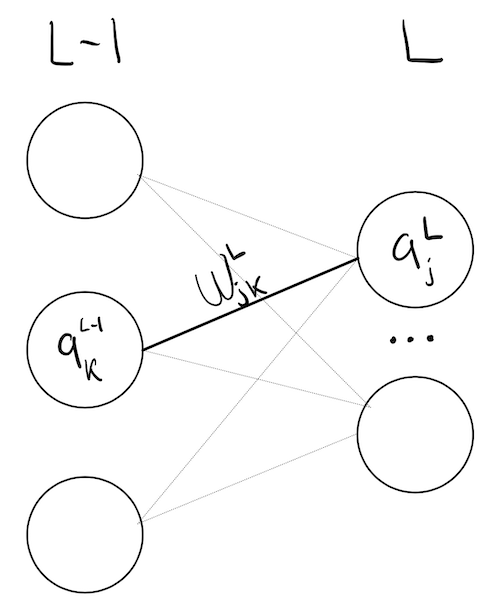
Here, we’ve labeled each neuron by its activation, layer number, and number in layer. For example, \(\ajl\) is neuron \(\j\), in layer \(L\), and \(\wjkl\) is the weight that connects neuron \(\k\) in layer \(L-1\) to neuron \(\j\) in layer \(L\).
Now, the cost of a single example \(\czero\) is a sum over the activations of all neurons in the last layer:
\[ \czero = \frac{1}{2}\sum_{\j} (\ajl - y_{\j})^2 \]
which in vector notation is:
\[ \czero = \frac{1}{2}\|\va^L - \vy\|^2 \]
Before going into vector/matrix notation, lets still deal with an individual weight in this network: \(\wjkl\), and write out our backprop equation for this single weight:
\[ \dcdwjk = \dzjdwjk \dajdzj \dcdaj \]
For completion, lets write expressions for each of its pieces.
For \(\dcdaj\):
\[ \begin{align} \czero &= \frac{1}{2}\sum_{\j} (\ajl - y_{\j})^2 \\ \dcdaj &= (\ajl - y_j) \end{align} \]
For \(\dajdzj\): \[ \begin{align} \dajdzj = \sigma(\zjl)(1-\zjl) \end{align} \]
For \(\dzjdwjk\): \[ \begin{align} \zjl &= \ldots + \wjkl \color{green}{a_k^{L-1}} + \ldots \\ \dzjdwjk & = \color{green}{a_k^{L-1}} \end{align} \]
Note: Pay particular attention to the \(k\) index in the equation above! Remember, our weights are applied to the activations of the previous layer, which we are using \(k\) to index!
Just as we did above, we can define a neuron specific error measure for neuron \(j\) in layer \(L\) as:
\[ \begin{align} \delta_{j}^L &= \frac{\dc}{\color{orange}{\partial}\zjl} \\ &= \dajdzj \dcdaj \\ &= \sigma(\zjl)\sigma(1-\zjl) (\ajl - y_j) \end{align} \]
Note: pay particular attention to the \(j\) index above! This is with respect to the current layer, which we are using \(j\) to index!
This lets us rewrite the above as:
\[ \dcdwjk = \color{green}{a_k^{L-1}} \delta_{j}^L \]
Above we’ve given the equation for how the cost changes with a specific weight in our multi dimensional network. Notice how close it is to the 1D case!
💪🏽Exercise: Give the equation for \(\frac{\dc}{\color{purple}{\partial b^L_j}}\)
Now, lets look at \(\dcdakx{L-1}\). This is asking how the cost varies when we change the activation of a neuron \(k\) in layer \(L-1\).
Just using pattern matching, we might want to write:
\[ \dcdakx{L-1} \stackrel{\color{red}{?}}{=} \wjkl \delta_j^L \]
But this is incorrect! To see why, lets draw a picture showing how nueron \(k\) in layer \(L-1\) affects the current layer (and therefore the cost):
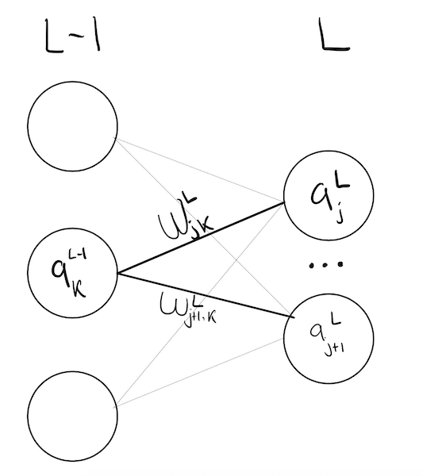
Aha! The activation of neuron \(k\) in layer \(L-1: \akx{L-1}\) does not just flow through neuron \(j\) in layer \(L\), it flows through every single neuron in layer \(L\)!
So if we want to account for the effect a small nudge to this neuron’s activation value has on our cost, we need to account for each neuron in layer \(L\), and each associated weight!
Our correct equation is then:
\[ \dcdakx{L-1} = \sum_j \left[ \wjkl \delta_j^L \right] \]
Implementation
Ok! We’ve gone to the multidimensional case, but still given equations for each individual parameter. So really, its almost exactly as it was in the 1D case!
💪🏽Exercise: Implement the backprop equations above!
As a hint, some pseudo-code for the implementation would be:
# skipping setup
# skipping forward pass
for sample in inputs:
# last layer
for neuron_j in layer[-1].neurons:
delta_j = # calculate according to formula above
dc_dwj = # calculate according to formula above
dc_dbj = # calculate according to formula above
dc_dak^{L-1} = # calculate according to formula above
# other layers
for layer in layers-1:
for neuron_j in layer[l].neurons:
delta_j = # calculate according to formula above
dc_dwj = # calculate according to formula above
dc_dbj = # calculate according to formula above
dc_dak^{L-1} = # calculate according to formula above
N-D Revisited - Vector Notation
Above, we gave specific equations for each parameter in a multi dimensional network. This will work, as your implementation should prove!
However, it leaves much to be desired in terms of efficiency, and conciseness, and it doesn’t allow us to make full use of the magic of our numerical linear algebra libraries!
Lets begin our analysis with our error vector \(\delta_{j}^L\):
\[ \begin{align} \delta_{j}^L &= \frac{\dc}{\color{orange}{\partial}\zjl} \\ &= \dajdzj \dcdaj \\ &= \sigma(\zjl)\sigma(1-\zjl) (\ajl - y_j) \\ &= \sigma^{\color{red}{\prime}}(\zjl) (\ajl - y_j) \end{align} \] where we brought back the \(\sigma^{\color{red}{\prime}}(\cdot)\) notation.
We would like to write a vector for our error \(\delta^L\), where each component is:
\[ \delta^L = \begin{bmatrix} \sigma^{\color{red}{\prime}}(\color{orange}{z_1^L}) (\color{green}{a_1^L} - y_1) \\ \cdots \\ \sigma^{\color{red}{\prime}}(\zjl) (\color{green}{a_j^L} - y_j)\\ \cdots \end{bmatrix} \]
This is exactly the definition of element-wise product of the following vectors: \(\color{orange}{\mathbf{z}^L},\color{green}{\mathbf{a}^L}\) and \(\vy\):
\[ \delta^L = \sigma^{\color{red}{\prime}}(\color{orange}{\mathbf{z}^L}) \odot (\color{green}{\mathbf{a}^L} - \vy) \]
where we introduce another piece of notation:
📖Definition: The Hadamard product between two vectors is the element-wise product:
\[ \mathbf{a} \odot \mathbf{b} = \begin{bmatrix} a_1 \cdot b_1 \\ \cdots \\ a_n \cdot b_n \end{bmatrix} \]
Lets define a function to implement this element-wise product:
def hadamard(a,b):
result = np.zeros_like(a)
for i in range(a.shape[0]):
result[i] = a[i] * b[i]
return resultLets test it!
a,b = np.random.randint(1,10,(3,1)),np.random.randint(1,10,(3,1))
a,b(array([[4],
[9],
[3]]),
array([[5],
[5],
[9]]))hadamard(a,b)array([[20],
[45],
[27]])It works!
However, Python actually already does this element-wise product for us! Using the * operator!
a*barray([[20],
[45],
[27]])So we didn’t have to implement our own. But thats ok, because we know how to. Lets get back to business!
We’ve rewritten BP1 in vector notation. Lets now focus on BP2: moving the error “backward”.
Well, we can probably already guess its going to involve the hadamard product with \(\sigma^{\color{red}{\prime}}(\cdot)\) as it did previously. We just don’t know with what yet!
\[ \begin{align} \delta^\ell = ?? \odot \sigma^{\color{red}{\prime}}(\mathbf{\zx{\ell}}) \end{align} \]
Well, lets try to reason through it from “first principles” (recall: this means make the sizes work!).
\(\delta^\ell\) is a vector, which should be of size \(k\), the number of elements in layer \(\ell\). We know its going to be formed with the weight matrix and \(\delta^{\ell+1}\), so lets write their sizes:
\[ \color{blue}{W^{\ell+1}}: (j \times k), \quad\quad \delta^{\ell+1}: (j \times 1) \]
How do we multiply these out to get a vector of size \(k \times 1\) out?
🧐
Indeed! We need to transpose our weight matrix, and then take the usual matrix-vector product with \(\delta^{\ell+1}\)!
Now we can write the vectorized equation for the error at any layer:
📖Vectorized BP2: The error at any layer \(\ell\) can be written as as function of the next layer as:
\[ \delta^{\ell} = (\color{blue}{W^{\ell+1}})^T \delta^{\ell+1} \odot \sigma^{\color{red}{\prime}}(\mathbf{\zx{\ell}}) \]
🧐Pause-and-ponder: What can we say about our previous interpretation in light of this new equation?
Lets quickly tackle BP3:
📖Vectorized-BP3:
\[ \frac{\dc}{\color{purple}{\partial \mathbf{b}^\ell}} = \delta^\ell \]
Well, that was easy! Its just as it was above, but as a vector.
Hm. Now we get to the tough one: BP4. This is now a partial derivative of our cost with respect to weight matrix!
Lets start at the last layer. \(\color{blue}{W^L}\) is of size \(j \times k\), where \(j\) is the size of the last layer.
So, we should expect its gradient to be of the same size: a matrix. If its not clear why, just imagine how were going to use this partial. We’re going to add it the current value of \(\color{blue}{W}\) in gradient descent, so it better be of the same size!
To form this matrix, we have \(\color{green}{\mathbf{a}^{L-1}}\), which is of size \(k \times 1\), the size of the previous layer, and \(\delta^L\), which is of size \(j \times 1\).
So how do we form this matrix using these two vectors? We take the outer product:
\[ \delta^L(\color{green}{\mathbf{a}^{L-1}})^T \]
Lets make sure the sizes work!
\[ (j \times 1)(1 \times k) = (j \times k) \]
Perfect!
📖Vectorized BP4:
\[ \frac{\dc}{ \color{blue}{ \partial \mathbf{W^\ell} } } = \delta^L(\color{green}{\mathbf{a}^{L-1}})^T \]
Finally! Lets give fully vectorized forms of the batchprop equations:
F.F.B.E - Vectorized™
Lets cap this off by writing vectorized versions of the four fundamental backpropagation equations:
📖Definition: Vectorized versions of the Four Fundamental Backpropagation Equations™ are given by:
\[ \begin{align} \delta^L &= (\color{green}{\mathbf{a}^L} - \vy) \odot \sigma^{\color{red}{\prime}}(\color{orange}{\mathbf{z}^L}) \tag{BP1}\\ \delta^{\ell} &= (\color{blue}{W^{\ell+1}})^T \delta^{\ell+1} \odot \sigma^{\color{red}{\prime}}(\mathbf{\zx{\ell}})\tag{BP2} \\ \frac{\dc}{\color{purple}{\partial \mathbf{b}^\ell}} &= \delta^\ell \tag{BP3} \\ \frac{\dc}{ \color{blue}{ \partial \mathbf{W^\ell} } } &= \delta^\ell(\color{green}{\mathbf{a}^{\ell-1}})^T \tag{BP4} \end{align} \]
Implementation
Wow! Now we’ve really come a long way!
💪🏽Exercise: Implement the backprop equations above!
🧐Pause-and-ponder: How do you deal with multiple samples?
Initialize our toy problem as always:
X,y = toy()Since we’re still dealing with a flat implementation, lets go ahead and initialize our weights and biases here:
# initialize weight matrices - notice the dimensions
W_1_init = np.random.randn(3,1)
W_2_init = np.random.randn(2,3)
W_3_init = np.random.randn(1,2)
weights = [W_1_init,W_2_init,W_3_init]
# and our biases
b_1_init = np.random.randn(3,1)
b_2_init = np.random.randn(2,1)
b_3_init = np.random.randn(1,1)
biases = [b_1_init,b_2_init,b_3_init]Now we can use the feedforward batch implementation we gave above:
def feedforward_batch(X, weights, biases):
# assume inputs is of shape Nxd
W_1,W_2,W_3 = weights[0],weights[1],weights[2]
b_1,b_2,b_3 = biases[0],biases[1],biases[2]
activities = []
activations = []
# NOTE - there is no for loop here!
# treat activations like layer_0 activations:
activations.append(X.T)
# layer 1
z_1 = W_1.dot(X.T) + b_1
a_1 = sigmoid(z_1)
activities.append(z_1)
activations.append(np.squeeze(np.asarray(a_1)))
# layer 2
z_2 = W_2.dot(a_1)+b_2
a_2 = sigmoid(z_2)
activities.append(z_2)
activations.append(np.squeeze(np.asarray(a_2)))
# output layer
z_3 = W_3.dot(a_2)+b_3
y_hat = sigmoid(z_3)
activities.append(z_3)
activations.append(np.asarray(y_hat))
return activities, activationsLets actually feed-forward our entire dataset:
activities, activations = feedforward_batch(X,weights,biases)Lets check the sizes of these:
print(activities[0].shape,activities[1].shape,activities[2].shape)(3, 1000) (2, 1000) (1, 1000)print(activations[0].shape,activations[1].shape,
activations[2].shape, activations[3].shape)(1, 1000) (3, 1000) (2, 1000) (1, 1000)Note: We’re calling our input our first activity, which is why there is one extra.
Now we’re ready to run backprop on each sample in our dataset, to generate bias and weight updates for each sample.
Lets start with a sigmoid prime function we will need:
def sigmoid_prime(z):
return sigmoid(z)*(1-sigmoid(z))plt.plot(sigmoid(np.linspace(-10,10)));
plt.plot(sigmoid_prime(np.linspace(-10,10)));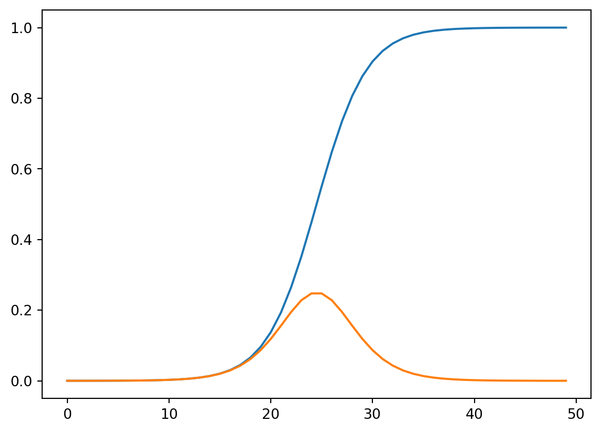
Lets continue our work:
N,d = inputs.shape
weight_updates = []
bias_updates = []layer_num = len(activations)
weight_updates = []
bias_updates = []Now our equations are above are only for one sample! So lets pick one and proceed:
sample_idx = 0Ok, so lets run backprop on that one sample, by starting with our last layer:
########################################
# Last Level
########################################
# get last layer specific variables
z_L = activities[-1][:,sample_idx].reshape(-1,1)
a_L = activations[-1][:,sample_idx].reshape(-1,1)
a_L_minus_1 = activations[-2][:,sample_idx].reshape(-1,1)(z_L.shape,a_L.shape,a_L_minus_1.shape)((1, 1), (1, 1), (2, 1))Are these what we expect?
Lets use them in the formulas we gave above!
# calculate delta_L for the last level
delta_L = (a_L-y[sample_idx])*sigmoid_prime(z_L)delta_L.shape(1, 1)Lets make a list to store all these delta values!
deltas = []
deltas.append(delta_L)Now lets calculate the bias update:
# calculate bias update
dc_db_l = delta_L
bias_updates = [dc_db_l] + bias_updates
dc_db_l.shape(1, 1)And the weight update:
# calcualte weight updates
dc_dw_l = delta_L.dot((a_L_minus_1).T)
weight_updates = [dc_dw_l] + weight_updates
dc_dw_l.shape(1, 2)Wow! We’ve run backprop across our last layer! Now all we have to do, is apply this to the rest of our layers!
########################################
# loop through each layer, from 2 to L-1
########################################
for layer in range(2,layer_num):
# using level as a **negative index**
l = -layer
# uncomment this print statement
# to help you understand how negative indexing works
print(f"Loop variable: {layer}, l={l}, corresponding to layer: l{l}")
# calculate delta_l for each layer
z_l = activities[l][:,sample_idx].reshape(-1,1)
a_l = activations[l][:,sample_idx].reshape(-1,1)
delta_l = weights[l+1].T.dot(deltas[l+1]) * sigmoid_prime(z_l)
deltas = [delta_l] + deltas
# calculate bias update
dc_db_l = delta_l
bias_updates = [dc_db_l] + bias_updates
# calcualte weight updates
a_l_minus_1 = activations[l-1][:,sample_idx].reshape(-1,1)
dc_dw_l = delta_l.dot((a_l_minus_1).T)
weight_updates = [dc_dw_l] + weight_updates
print(f'=========Layer:{layer_num+l}=========')
print(f'Using negative index: {l}')
print(f'z_l:{z_l.shape}, a_l:{a_l.shape}, a_l_minus_1:{a_l_minus_1.shape}')
print(f'delta_l:{delta_l.shape}, dc_db_l:{dc_db_l.shape},dc_dw_l:{dc_dw_l.shape}')
print()Loop variable: 2, l=-2, corresponding to layer: l-2
=========Layer:2=========
Using negative index: -2
z_l:(2, 1), a_l:(2, 1), a_l_minus_1:(3, 1)
delta_l:(2, 1), dc_db_l:(2, 1),dc_dw_l:(2, 3)
Loop variable: 3, l=-3, corresponding to layer: l-3
=========Layer:1=========
Using negative index: -3
z_l:(3, 1), a_l:(3, 1), a_l_minus_1:(1, 1)
delta_l:(3, 1), dc_db_l:(3, 1),dc_dw_l:(3, 1)
All thats left to do, is wrap this up in a reusable function!
def backprop_1_example(activities,activations,y,sample_idx,quiet=True):
layer_num = len(activations)
weight_updates = []
bias_updates = []
########################################
# Last Level
########################################
# get last layer specific variables
a_L = activations[-1][:,sample_idx].reshape(-1,1)
a_L_minus_1 = activations[-2][:,sample_idx].reshape(-1,1)
z_L = activities[-1][:,sample_idx].reshape(-1,1)
# calculate delta_L for the last level
delta_L = (a_L-y)*sigmoid_prime(z_L)
deltas = []
deltas.append(delta_L)
# calculate bias update
dc_db_L = delta_L
bias_updates = [dc_db_L] + bias_updates
# calcualte weight updates
dc_dw_L = delta_L.dot((a_L_minus_1).T)
weight_updates = [dc_dw_L] + weight_updates
if not quiet:
print(f'=========Layer:{layer_num+-1}=========')
print(f'Using negative index: -1')
print(f'z_l:{z_L.shape}, a_l:{a_L.shape}, a_l_minus_1:{a_L_minus_1.shape}')
print(f'delta_l:{delta_L.shape}, dc_db_l:{dc_db_L.shape},dc_dw_l:{dc_dw_L.shape}')
print()
########################################
# loop through each layer, from 2 to L-1
########################################
for layer in range(2,layer_num):
# using level as a **negative index**
l = -layer
# uncomment this print statement
# to help you understand how negative indexing works
# print(f"Loop variable: {layer}, l={l}, corresponding to layer: l{l}")
# calculate delta_l for each layer
a_l = activations[l][:,sample_idx].reshape(-1,1)
z_l = activities[l][:,sample_idx].reshape(-1,1)
delta_l = weights[l+1].T.dot(deltas[l+1]) * sigmoid_prime(z_l)
deltas = [delta_l] + deltas
# calculate bias update
dc_db_l = delta_l
bias_updates = [dc_db_l] + bias_updates
# calcualte weight updates
a_l_minus_1 = activations[l-1][:,sample_idx].reshape(-1,1)
dc_dw_l = delta_l.dot((a_l_minus_1).T)
weight_updates = [dc_dw_l] + weight_updates
if not quiet:
print(f'=========Layer:{layer_num+l}=========')
print(f'Using negative index: {l}')
print(f'z_l:{z_l.shape}, a_l:{a_l.shape}, a_l_minus_1:{a_l_minus_1.shape}')
print(f'delta_l:{delta_l.shape}, dc_db_l:{dc_db_l.shape},dc_dw_l:{dc_dw_l.shape}')
print()
return weight_updates, bias_updatesWe now have the following: * feedforward_batch: a function which feeds entire batches through our network * backprop_1_example: a function which backpropagates the erorr associated with a single example through the network
Lets now revisit:
🧐Pause-and-ponder: How do you deal with multiple samples?
And try to think of how we can implement this algorithm:
More interesting example
# Generate the dataset
X, y = sklearn.datasets.make_circles(
n_samples=1000, shuffle=False, factor=0.3, noise=0.1)
# Separate the red and blue samples for plotting
x_red = X[y==0]
x_blue = X[y==1]
# correct size of y
y = y.reshape(-1,1)
print('shape of X: {}'.format(X.shape))
print('shape of y: {}'.format(y.shape))shape of X: (1000, 2)
shape of y: (1000, 1)# Plot both classes on the x1, x2 plane
plt.figure(figsize=(10, 7))
plt.plot(x_red[:,0], x_red[:,1], 'r*',
label='class: red star', alpha=0.75)
plt.plot(x_blue[:,0], x_blue[:,1], 'bo',
label='class: blue circle', alpha=0.75)
plt.legend(loc=1)
plt.xlabel('$x_1$', fontsize=20)
plt.ylabel('$x_2$', fontsize=20)
plt.axis([-1.5, 1.5, -1.5, 1.5])
plt.title('red star vs blue circle classes in the input space', fontsize=20);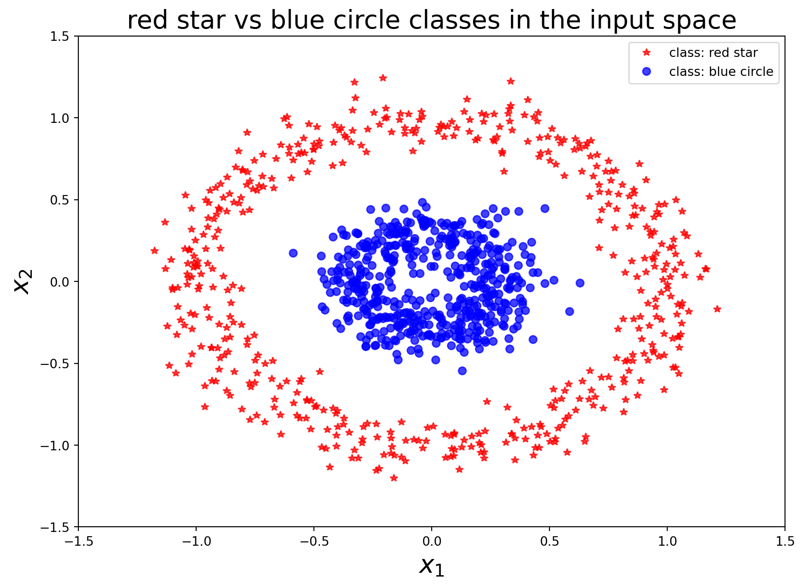
Train our Network!
Now we can actually train our network using gradient descent as we have before!
# dataset
N = X.shape[0]
d = X.shape[1]
batch_size = 50
epochs = 10
eta=1e-2
dataset=X
quiet=False
# initialize weight matrices - notice the dimensions
W_1_init = np.random.rand(3,2)
W_2_init = np.random.rand(3,3)
W_3_init = np.random.randn(1,3)
weights = [W_1_init,W_2_init,W_3_init]
# and our biases
b_1_init = np.random.rand(3,1)
b_2_init = np.random.rand(3,1)
b_3_init = np.random.rand(1,1)
biases = [b_1_init,b_2_init,b_3_init]
# network
W_1,W_2,W_3 = weights[0],weights[1],weights[2]
b_1,b_2,b_3 = biases[0],biases[1],biases[2]
# mini-batch params
num_batches = int(N/batch_size)
iterations = 0
# debugging lists
loss = []
grad_norm_1 = []
grad_norm_2 = []
grad_norm_3 = []
norm_1 = []
norm_2 = []
norm_3 = []
for epoch in range(epochs):
# work on current batch
for batch_num in range(num_batches):
# get current batch
batch_start = batch_num*batch_size
batch_end = (batch_num+1)*batch_size
batch = dataset[batch_start:batch_end,:]
batch_labels = labels[batch_start:batch_end,:].reshape(-1,1)
# feedforward on batch
activities, activations = feedforward_batch(batch, weights,biases)
# setup matrices to hold gradients
grad_W_1 = np.zeros_like(W_1)
grad_b_1 = np.zeros_like(b_1)
grad_W_2 = np.zeros_like(W_2)
grad_b_2 = np.zeros_like(b_2)
grad_W_3 = np.zeros_like(W_3)
grad_b_3 = np.zeros_like(b_3)
# loop through each example in the batch
for idx in range(batch.shape[0]):
current_sample = batch[idx,:]
current_label = batch_labels[idx]
# get current weight and bias updates
weight_updates, bias_updates = backprop_1_example(activities,activations,current_label,idx)
# aggregate them
grad_W_1 = grad_W_1 + weight_updates[0]
grad_b_1 = grad_b_1 + bias_updates[0]
grad_W_2 = grad_W_2 + weight_updates[1]
grad_b_2 = grad_b_2 + bias_updates[1]
grad_W_3 = grad_W_3 + weight_updates[2]
grad_b_3 = grad_b_3 + bias_updates[2]
grad_norm_1.append(np.linalg.norm(grad_W_1))
grad_norm_2.append(np.linalg.norm(grad_W_2))
grad_norm_3.append(np.linalg.norm(grad_W_3))
# take your steps:
W_1 = W_1 - eta/batch_size*(grad_W_1)
b_1 = b_1 - eta/batch_size*(grad_b_1)
W_2 = W_2 - eta/batch_size*(grad_W_2)
b_2 = b_2 - eta/batch_size*(grad_b_2)
W_3 = W_3 - eta/batch_size*(grad_W_3)
b_3 = b_3 - eta/batch_size*(grad_b_3)
norm_1.append(np.linalg.norm(W_1))
norm_2.append(np.linalg.norm(W_2))
norm_3.append(np.linalg.norm(W_3))
# save new weights and biases to be used in the next feedforward step
weights = [W_1,W_2,W_3]
biases = [b_1,b_2,b_3]
# calculate current loss
loss.append(mse(activations[-1],batch_labels))
print(f"Epoch:{epoch+1}/{epochs}")Epoch:1/10
Epoch:2/10
Epoch:3/10
Epoch:4/10
Epoch:5/10
Epoch:6/10
Epoch:7/10
Epoch:8/10
Epoch:9/10
Epoch:10/10🧐 Hm. Wait a minute - how do we know we’re doing the right thing? We should check it!
Gradient Checking
Backprop implementations are notoriously difficult to get right! That means we should implement some kind of numerical check for correctness.
🧐Pause-and-ponder: Can you think of a way we could numerically check that our analytical gradients are correct?
Numerical Gradients!
Having thought about it a bit, you might have thought to check our numerical approximations for the derivative!
Recall, we could write the cost function as a function of one long vector of all of our parameters:
\[ \czero(\color{blue}{\mathbf{W}_1,\mathbf{W}_2,\mathbf{W}_3},\color{purple}{\mathbf{b}_1,\mathbf{b}_2,\mathbf{b}_3}) = \czero(\color{blue}{w_{0,0},w_{0,1},\ldots,w_{1,0},w_{1,1}},\ldots,\color{purple}{b_{0,0},b_{0,1}},\ldots) \]
To abstract this away, we can write it out as:
\[ \czero (\theta_1,\theta_2,\ldots,\theta_i,\ldots) \]
Well, then one way we could check for correctness, is to calculate the two sided difference \(\Delta_i\):
\[ \begin{align} \Delta_i &= \frac{\czero (\theta_1,\theta_2,\ldots,\color{red}{\theta_i+\epsilon},\ldots) - \czero (\theta_1,\theta_2,\ldots,\color{red}{\theta_i-\epsilon},\ldots)}{2\epsilon} \end{align} \]
We know this is an approximation for our desired partial when \(\epsilon\) is very small:
\[ \Delta_i \approx \frac{\dc}{\partial \theta_i} \]
So we can use this approximation to see how close it is to our analytical gradient!
Specifically, we want to calculate:
\[ \frac{\|\Delta_i - \frac{\dc}{\partial \theta_i} \|_2}{\|\Delta_i\|_2 + \|\frac{\dc}{\partial \theta_i}\|_2 } \]
And verify that this is very small for all of our parameters! Specifically, we can choose \(\epsilon = 10^{-7}\), and expect this difference to be \(<10^{-7}\). If so, we can call our backprop code:
A note before we proceed, its very common to use the ravel function to do this flattening out, and then use concatenate to join our newly flattened arrays”
a,b = np.random.randint(1,10,(3,2)),np.random.randint(1,10,(4,3))
a,b(array([[1, 5],
[7, 8],
[6, 4]]),
array([[2, 9, 1],
[1, 4, 3],
[7, 9, 1],
[5, 2, 5]]))a.ravel()array([1, 5, 7, 8, 6, 4])np.concatenate((a.ravel(),b.ravel()))array([1, 5, 7, 8, 6, 4, 2, 9, 1, 1, 4, 3, 7, 9, 1, 5, 2, 5])So now, we can use these to flatten all of our parameters, and join them into one big vector which we can then perturb.
Lets define a couple helper functions which will help us unravel and then reform them.
The first is get_params, which will return a single vector of all our parameters, using python’s list comprehension:
def get_params(weights,biases):
weight_params = [weight.ravel() for weight in weights]
bias_params = [bias.ravel() for bias in biases]
all_params = weight_params+bias_params
return np.concatenate(all_params)get_params(weights,biases)array([ 0.95146153, 0.14574839, 0.26819204, 0.49007427, 0.68636193,
0.34982404, 0.30466157, 0.07506378, 0.09337177, 0.64784284,
0.54340416, 0.24677343, 0.48584084, 0.47496871, 0.98699458,
-0.10895737, -0.05794465, -0.3094642 , 0.6754623 , 0.53576777,
0.67712378, 0.97417763, 0.94446346, 0.60630401, 0.25828432])Verify that this is of the correct length, based on our network structure!
get_params(weights,biases).shape(25,)We can also define a set_params function, which is responsible for re-forming our parameters into the correct shapes, given one long vector:
def set_params(param_vector,orig_weights,orig_biases):
# set weights
new_weights=[]
pointer = 0
for weight_mat in orig_weights:
curr_len = (weight_mat.shape[0]*weight_mat.shape[1])
new_mat = param_vector[pointer:pointer+curr_len].reshape(weight_mat.shape)
new_weights.append(new_mat)
pointer += curr_len
# set biases
new_biases=[]
for weight_vec in orig_biases:
curr_len = (weight_vec.shape[0]*weight_vec.shape[1])
new_vec = param_vector[pointer:pointer+curr_len].reshape(weight_vec.shape)
new_biases.append(new_vec)
pointer += curr_len
return new_weights,new_biasesNote: This function takes an original set of weights and biases, but only uses it for the sizes of each element!
Lets run both of our new functions and verify they work as expected:
new_weights,new_biases = set_params(get_params(weights,biases),weights,biases)Now we can once again use list comprehension to quickly check if new_weights is equal to weights, and new_biases is equal to biases at each element:
[np.array_equal(i,j) for i,j in zip(weights,new_weights)][True, True, True][np.array_equal(i,j) for i,j in zip(biases,new_biases)][True, True, True]We should see all True there! Perfect, our unraveling and raveling works as we expect. Now we can use this to perform gradient checking.
Implementation
We can now begin to implement our numerical gradient checking, by defining a function that lets us do this:
def gradient_checking(weights,biases,batch,idx,current_label,weight_updates,bias_updates,epsilon=1e-7):
# unravel the current params
params = get_params(weights,biases)
diff_vec = np.zeros_like(params)
# loop through, perturbing one parameter at a time:
for p_index in range(params.shape[0]):
perturb = np.zeros_like(params)
perturb[p_index] = epsilon
# feedforward at each side
_, activations_p = feedforward_batch(batch,*set_params(params + perturb,weights,biases))
_, activations_m = feedforward_batch(batch,*set_params(params - perturb,weights,biases))
# calculate cost of each side
cost_plus = cost_mse(activations_p[-1][:,idx],current_label)
cost_minus = cost_mse(activations_m[-1][:,idx],current_label)
# calcualte \Delta_i
diff_vec[p_index] = (cost_plus - cost_minus)/(2*epsilon)
# calculate the difference for this round of backprop
grad_vec = get_params(weight_updates, bias_updates)
grad_error = np.linalg.norm(diff_vec - grad_vec)/(np.linalg.norm(diff_vec) + np.linalg.norm(grad_vec))
if grad_error > epsilon:
print("Error in gradient calculation!")
return grad_errorThis function takes the following:
weights: the current weights of our networkbiases: the current biases of our networkbatch: the current batch of dataidx: the index of our current sample,current_label: the current label, of the current sampleweight_updates: the list of gradients of the weights we calculatedbias_updates: the list of gradients of the biases we calculatedepsilon=1e-7: a default epsilon value
Its a bit verbose, but thats because we’re going for a flat implementation. Once we’ve understood all the pieces, we can wrap everything up nice and neat.
With this, lets re-run our training but this time perform gradient checking!
def backprop_1_example1(activities,activations,y,quiet=True):
my_bp['act'].append(activations)
layer_num = len(activations)
weight_updates = []
bias_updates = []
########################################
# Last Level
########################################
# get last layer specific variables
a_L = activations[-1].reshape(-1,1)
a_L_minus_1 = activations[-2].reshape(-1,1)
z_L = activities[-1].reshape(-1,1)
# calculate delta_L for the last level
delta_L = (a_L-y)*sigmoid_prime(z_L)
my_bp['delta'].append(delta_L)
deltas = []
deltas.append(delta_L)
# calculate bias update
dc_db_L = delta_L
bias_updates = [dc_db_L] + bias_updates
# calcualte weight updates
dc_dw_L = delta_L.dot((a_L_minus_1).T)
my_bp['w'].append(dc_dw_L)
weight_updates = [dc_dw_L] + weight_updates
if not quiet:
print(f'=========Layer:{layer_num+-1}=========')
print(f'Using negative index: -1')
print(f'z_l:{z_L.shape}, a_l:{a_L.shape}, a_l_minus_1:{a_L_minus_1.shape}')
print(f'delta_l:{delta_L.shape}, dc_db_l:{dc_db_L.shape},dc_dw_l:{dc_dw_L.shape}')
print()
########################################
# loop through each layer, from 2 to L-1
########################################
for layer in range(2,layer_num):
# using level as a **negative index**
l = -layer
# uncomment this print statement
# to help you understand how negative indexing works
# print(f"Loop variable: {layer}, l={l}, corresponding to layer: l{l}")
# calculate delta_l for each layer
a_l = activations[l].reshape(-1,1)
z_l = activities[l].reshape(-1,1)
delta_l = weights[l+1].T.dot(deltas[l+1]) * sigmoid_prime(z_l)
my_bp['delta'].append(delta_l)
deltas = [delta_l] + deltas
# calculate bias update
dc_db_l = delta_l
bias_updates = [dc_db_l] + bias_updates
# calcualte weight updates
a_l_minus_1 = activations[l-1].reshape(-1,1)
dc_dw_l = delta_l.dot((a_l_minus_1).T)
my_bp['w'].append(dc_dw_l)
weight_updates = [dc_dw_l] + weight_updates
if not quiet:
print(f'=========Layer:{layer_num+l}=========')
print(f'Using negative index: {l}')
print(f'z_l:{z_l.shape}, a_l:{a_l.shape}, a_l_minus_1:{a_l_minus_1.shape}')
print(f'delta_l:{delta_l.shape}, dc_db_l:{dc_db_l.shape},dc_dw_l:{dc_dw_l.shape}')
print()
return weight_updates, bias_updates# dataset
N = X.shape[0]
d = X.shape[1]
batch_size = 50
epochs = 10
eta=1e-2
dataset=X
labels=y
quiet=False
# gradient checking
epsilon = 1e-7
# initialize weight matrices - notice the dimensions
W_1_init = np.random.rand(3,2)
W_2_init = np.random.rand(3,3)
W_3_init = np.random.randn(1,3)
weights = [W_1_init,W_2_init,W_3_init]
# and our biases
b_1_init = np.random.rand(3,1)
b_2_init = np.random.rand(3,1)
b_3_init = np.random.rand(1,1)
biases = [b_1_init,b_2_init,b_3_init]
# network
W_1,W_2,W_3 = weights[0],weights[1],weights[2]
b_1,b_2,b_3 = biases[0],biases[1],biases[2]
# mini-batch params
num_batches = int(N/batch_size)
iterations = 0
# various debugging lists
loss = []
grad_norm_1 = []
grad_norm_2 = []
grad_norm_3 = []
norm_1 = []
norm_2 = []
norm_3 = []
grad_errors = []
diff_vecs = []
grad_vecs = []
my_act = []
my_w = []
my_b = []
my_bp = {'x':[],'y':[],'act':[],'delta':[],'w':[]}
for epoch in range(epochs):
# shuffle the dataset - note we do this by shuffling indices
# indices = np.random.permutation(N)
# shuffled_dataset = dataset[indices,:]
# shuffled_labels = labels[indices,:]
shuffled_dataset = dataset
shuffled_labels = labels
# work on current batch
for batch_num in range(num_batches):
# get current batch
batch_start = batch_num*batch_size
batch_end = (batch_num+1)*batch_size
batch = shuffled_dataset[batch_start:batch_end,:]
batch_labels = shuffled_labels[batch_start:batch_end,:].reshape(-1,1)
# feedforward on batch
activities, activations = feedforward_batch(batch, weights,biases)
my_act.append(activations[-1])
# setup matrices to hold gradients
grad_W_1 = np.zeros_like(W_1)
grad_b_1 = np.zeros_like(b_1)
grad_W_2 = np.zeros_like(W_2)
grad_b_2 = np.zeros_like(b_2)
grad_W_3 = np.zeros_like(W_3)
grad_b_3 = np.zeros_like(b_3)
# loop through each example in the batch
for idx in range(batch.shape[0]):
current_sample = batch[idx,:].reshape(1,-1)
current_label = batch_labels[idx]
my_bp['x'].append(current_sample)
my_bp['y'].append(current_label)
curr_act, curr_activ = feedforward_batch(current_sample, weights,biases)
# get current weight and bias updates
weight_updates, bias_updates = backprop_1_example1(curr_act,curr_activ,
current_label)
my_w.append(weight_updates)
my_b.append(bias_updates)
# perform gradient cehcking
# grad_error = gradient_checking(weights,biases,batch,idx,current_label,
# weight_updates,bias_updates,epsilon)
# grad_errors.append(grad_error)
# aggregate our updates
grad_W_1 = grad_W_1 + weight_updates[0]
grad_b_1 = grad_b_1 + bias_updates[0]
grad_W_2 = grad_W_2 + weight_updates[1]
grad_b_2 = grad_b_2 + bias_updates[1]
grad_W_3 = grad_W_3 + weight_updates[2]
grad_b_3 = grad_b_3 + bias_updates[2]
grad_norm_1.append(np.linalg.norm(grad_W_1))
grad_norm_2.append(np.linalg.norm(grad_W_2))
grad_norm_3.append(np.linalg.norm(grad_W_3))
# take your steps:
W_1 = W_1 - eta/batch_size*(grad_W_1)
b_1 = b_1 - eta/batch_size*(grad_b_1)
W_2 = W_2 - eta/batch_size*(grad_W_2)
b_2 = b_2 - eta/batch_size*(grad_b_2)
W_3 = W_3 - eta/batch_size*(grad_W_3)
b_3 = b_3 - eta/batch_size*(grad_b_3)
norm_1.append(np.linalg.norm(W_1))
norm_2.append(np.linalg.norm(W_2))
norm_3.append(np.linalg.norm(W_3))
# save new weights and biases to be used in the next feedforward step
weights = [W_1,W_2,W_3]
biases = [b_1,b_2,b_3]
print(f"Epoch:{epoch+1}/{epochs}")Epoch:1/10
Epoch:2/10
Epoch:3/10
Epoch:4/10
Epoch:5/10
Epoch:6/10
Epoch:7/10
Epoch:8/10
Epoch:9/10
Epoch:10/10Now, lets plot our estimated gradient errors:
plt.plot(grad_errors);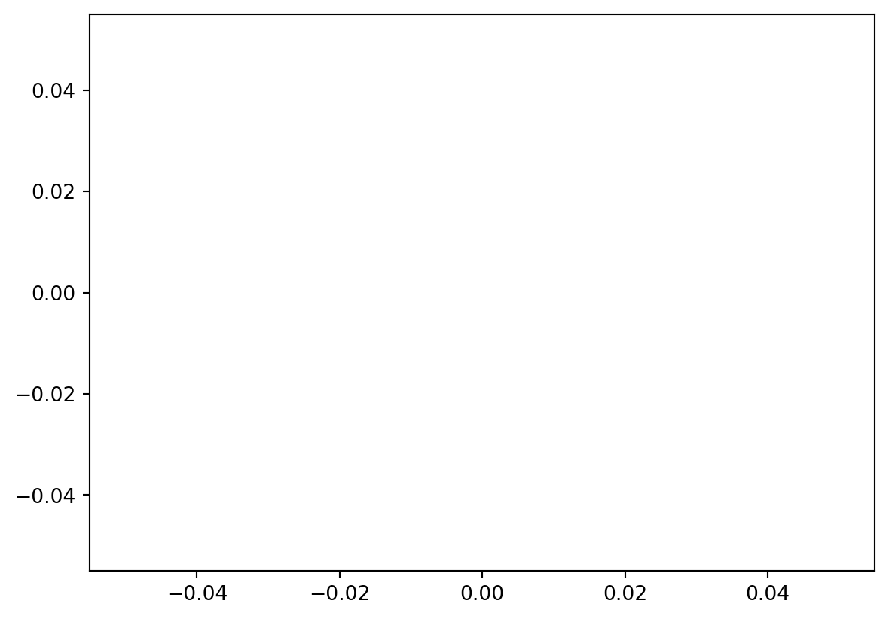
Wow! Look at that y axis! Pretty good! We cal also verify:
(np.array(grad_errors) < epsilon).all()np.True_Perfect! Our implementation of backprop is now completely:
Compare to Nielsen implementation:
class Network(object):
def __init__(self, sizes, weights=None, biases=None):
"""The list ``sizes`` contains the number of neurons in the
respective layers of the network. For example, if the list
was [2, 3, 1] then it would be a three-layer network, with the
first layer containing 2 neurons, the second layer 3 neurons,
and the third layer 1 neuron. The biases and weights for the
network are initialized randomly, using a Gaussian
distribution with mean 0, and variance 1. Note that the first
layer is assumed to be an input layer, and by convention we
won't set any biases for those neurons, since biases are only
ever used in computing the outputs from later layers."""
self.num_layers = len(sizes)
self.sizes = sizes
if weights is None:
self.weights = [np.random.randn(y, x)
for x, y in zip(sizes[:-1], sizes[1:])]
print("random weights")
else:
self.weights = weights
if biases is None:
self.biases = [np.random.randn(y, 1) for y in sizes[1:]]
print("random biases")
else:
self.biases = biases
def feedforward(self, a):
"""Return the output of the network if ``a`` is input."""
for b, w in zip(self.biases, self.weights):
a = sigmoid(np.dot(w, a)+b)
return a
def SGD(self, training_data, epochs, mini_batch_size, eta,
test_data=None):
"""Train the neural network using mini-batch stochastic
gradient descent. The ``training_data`` is a list of tuples
``(x, y)`` representing the training inputs and the desired
outputs. The other non-optional parameters are
self-explanatory. If ``test_data`` is provided then the
network will be evaluated against the test data after each
epoch, and partial progress printed out. This is useful for
tracking progress, but slows things down substantially."""
if test_data: n_test = len(test_data)
n = len(training_data)
for j in range(epochs):
# random.shuffle(training_data)
mini_batches = [
training_data[k:k+mini_batch_size]
for k in range(0, n, mini_batch_size)]
for mini_batch_idx in range(len(mini_batches)):
mini_batch = mini_batches[mini_batch_idx]
self.update_mini_batch(mini_batch, eta)
if test_data:
print("Epoch {0}: {1} / {2}".format(
j, self.evaluate(test_data), n_test))
else:
print("Epoch {0} complete".format(j))
def update_mini_batch(self, mini_batch, eta):
"""Update the network's weights and biases by applying
gradient descent using backpropagation to a single mini batch.
The ``mini_batch`` is a list of tuples ``(x, y)``, and ``eta``
is the learning rate."""
nabla_b = [np.zeros(b.shape) for b in self.biases]
nabla_w = [np.zeros(w.shape) for w in self.weights]
for x, y in mini_batch:
delta_nabla_b, delta_nabla_w = self.backprop(x, y)
nielsen_w.append(delta_nabla_w)
nielsen_b.append(delta_nabla_b)
nabla_b = [nb+dnb for nb, dnb in zip(nabla_b, delta_nabla_b)]
nabla_w = [nw+dnw for nw, dnw in zip(nabla_w, delta_nabla_w)]
self.weights = [w-(eta/len(mini_batch))*nw
for w, nw in zip(self.weights, nabla_w)]
self.biases = [b-(eta/len(mini_batch))*nb
for b, nb in zip(self.biases, nabla_b)]
def backprop(self, x, y):
"""Return a tuple ``(nabla_b, nabla_w)`` representing the
gradient for the cost function C_x. ``nabla_b`` and
``nabla_w`` are layer-by-layer lists of numpy arrays, similar
to ``self.biases`` and ``self.weights``."""
nabla_b = [np.zeros(b.shape) for b in self.biases]
nabla_w = [np.zeros(w.shape) for w in self.weights]
nielsen_bp['x'].append(x)
nielsen_bp['y'].append(y)
# feedforward
activation = x
activations = [x] # list to store all the activations, layer by layer
zs = [] # list to store all the z vectors, layer by layer
for b, w in zip(self.biases, self.weights):
z = np.dot(w, activation)+b
zs.append(z)
activation = sigmoid(z)
activations.append(activation)
nielsen_bp['act'].append(activations)
# backward pass
delta = self.cost_derivative(activations[-1], y) * \
sigmoid_prime(zs[-1])
nielsen_bp['delta'].append(delta)
nabla_b[-1] = delta
nabla_w[-1] = np.dot(delta, activations[-2].transpose())
nielsen_bp['w'].append(nabla_w[-1])
# Note that the variable l in the loop below is used a little
# differently to the notation in Chapter 2 of the book. Here,
# l = 1 means the last layer of neurons, l = 2 is the
# second-last layer, and so on. It's a renumbering of the
# scheme in the book, used here to take advantage of the fact
# that Python can use negative indices in lists.
for l in range(2, self.num_layers):
z = zs[-l]
sp = sigmoid_prime(z)
delta = np.dot(self.weights[-l+1].transpose(), delta) * sp
nabla_b[-l] = delta
nielsen_bp['delta'].append(delta)
nabla_w[-l] = np.dot(delta, activations[-l-1].transpose())
nielsen_bp['w'].append(nabla_w[-1])
return (nabla_b, nabla_w)
def evaluate(self, test_data):
"""Return the number of test inputs for which the neural
network outputs the correct result. Note that the neural
network's output is assumed to be the index of whichever
neuron in the final layer has the highest activation."""
test_results = [(np.argmax(self.feedforward(x)), y)
for (x, y) in test_data]
return sum(int(x == y) for (x, y) in test_results)
def cost_derivative(self, output_activations, y):
"""Return the vector of partial derivatives \partial C_x /
\partial a for the output activations."""
return (output_activations-y)
#### Miscellaneous functions
def sigmoid(z):
"""The sigmoid function."""
return 1.0/(1.0+np.exp(-z))
def sigmoid_prime(z):
"""Derivative of the sigmoid function."""
return sigmoid(z)*(1.0-sigmoid(z))<>:132: SyntaxWarning: invalid escape sequence '\p'
<>:132: SyntaxWarning: invalid escape sequence '\p'
/var/folders/t4/x6n1l3hs639gm_hvp1n5lrw00000gp/T/ipykernel_6662/4160697581.py:132: SyntaxWarning: invalid escape sequence '\p'
"""Return the vector of partial derivatives \partial C_x /nielsen_w = []
nielsen_b = []
nielsen_bp = {'x':[],'y':[],'act':[],'delta':[],'w':[]}
net = Network([2,3,3,1],weights=[W_1_init, W_2_init, W_3_init],
biases=[b_1_init, b_2_init, b_3_init])y_nielsen = net.feedforward(X.T)
_,act = feedforward_batch(X,weights=[W_1_init, W_2_init, W_3_init],
biases=[b_1_init, b_2_init, b_3_init])
y_mine = act[-1]y_nielsen[:,1:10]array([[0.80676531, 0.80775192, 0.80668478, 0.80720206, 0.80754835,
0.80719705, 0.80697375, 0.80729228, 0.80789725]])y_mine[:,1:10]array([[0.80676531, 0.80775192, 0.80668478, 0.80720206, 0.80754835,
0.80719705, 0.80697375, 0.80729228, 0.80789725]])((y_nielsen - y_mine)<0.001).all()np.True_np.array_equal(y_nielsen,y_mine)TrueThey are the same before training with he same weights, so the problem isnt in feedforward.
net.SGD([(lx.reshape(-1,1),ly.reshape(-1,1)) for lx,ly in zip(X,y)], epochs,batch_size,eta)Epoch 0 complete
Epoch 1 complete
Epoch 2 complete
Epoch 3 complete
Epoch 4 complete
Epoch 5 complete
Epoch 6 complete
Epoch 7 complete
Epoch 8 complete
Epoch 9 completenet.weights[array([[0.61548607, 0.92140757],
[0.35238306, 0.55005278],
[0.67198206, 0.43218442]]),
array([[0.63371336, 0.86170173, 0.54823693],
[0.43826572, 0.01348859, 0.756972 ],
[0.96754437, 0.67267935, 0.87508924]]),
array([[-0.06456789, 0.85655419, -0.08558956]])]weights[array([[0.61548607, 0.92140757],
[0.35238306, 0.55005278],
[0.67198206, 0.43218442]]),
array([[0.63371336, 0.86170173, 0.54823693],
[0.43826572, 0.01348859, 0.756972 ],
[0.96754437, 0.67267935, 0.87508924]]),
array([[-0.06456789, 0.85655419, -0.08558956]])][np.array_equal(i,j) for i,j in zip(weights,net.weights)][True, True, True][np.array_equal(i,j) for i,j in zip(biases,net.biases)][True, True, True]Fully vectorized implementation
Ok! We’ve done a lot of hard work! Now we’ve come to the final linear algebraic thing we need to do to make this fast 🏎💨.
We want to be able to backprop across batches, instead of across individual samples in a batch.
To do so, we will have to introduce 3D matrices!. In math these are called tensors!
📖 Definition: For our purposes, a tensor is defined as a multidimensional matrix.
Note: In python, these objects are called “N-D arrays” or just “arrays”. Vectors, and matrices are just 1D and 2D versions of these tensors/arrays.
Lets create one right now!
a = np.random.randint(1,10,(3,3,3))
aarray([[[4, 5, 9],
[9, 6, 3],
[4, 6, 5]],
[[6, 6, 9],
[3, 9, 9],
[2, 9, 1]],
[[2, 3, 5],
[9, 7, 5],
[2, 5, 7]]])🤔
This doesn’t look that special. Thats just because were printing this 3D object on a 2D notebook. Pay special attention to the [ and ] characters and you’ll notice its almost like its a list of a 2D matrices. Indeed, for right now, we can just think of it like that.
Lets grab the first matrix in the list:
a[0,:,:]array([[4, 5, 9],
[9, 6, 3],
[4, 6, 5]])And the second:
a[1,:,:]array([[6, 6, 9],
[3, 9, 9],
[2, 9, 1]])And the last:
a[-1,:,:]array([[2, 3, 5],
[9, 7, 5],
[2, 5, 7]])Ok, so far so good. Lets understand one more thing we need to do with these objects.
We want to be able to take this list/stack of matrices, and multiply the stack with another vector matrix. In other words, if I have a tensor T, which contains four matrices which we will call A, B, C, and D I want to be able to do something like:
T*v = Rwhere R is now a stack which contains Av,Bv, Cv, Dv.
And then at the end, I can average across the stack dimension, to produce one final 2D matrix which is just:
(Av+Bv+Cv+Dv)/4Ok. We’ve described in words the procedure we want to perform, so lets go about coding it up! To make this clear, lets define our tensor T as we described above:
A = np.ones((3,3))
Aarray([[1., 1., 1.],
[1., 1., 1.],
[1., 1., 1.]])B = np.ones((3,3))*2
Barray([[2., 2., 2.],
[2., 2., 2.],
[2., 2., 2.]])C = np.ones((3,3))*3
Carray([[3., 3., 3.],
[3., 3., 3.],
[3., 3., 3.]])D = np.ones((3,3))*4
Darray([[4., 4., 4.],
[4., 4., 4.],
[4., 4., 4.]])T = np.zeros((4,3,3))
T[0,:,:] = A
T[1,:,:] = B
T[2,:,:] = C
T[3,:,:] = D
T.shape,T((4, 3, 3),
array([[[1., 1., 1.],
[1., 1., 1.],
[1., 1., 1.]],
[[2., 2., 2.],
[2., 2., 2.],
[2., 2., 2.]],
[[3., 3., 3.],
[3., 3., 3.],
[3., 3., 3.]],
[[4., 4., 4.],
[4., 4., 4.],
[4., 4., 4.]]]))Note: we could have also used np.stack to do this for us:
np.stack((A,B,C,D)).shape(4, 3, 3)And now lets create that vector we wanted:
v = np.ones((3,1))
varray([[1.],
[1.],
[1.]])and verify how it interacts with each matrix in our stack:
A.dot(v)array([[3.],
[3.],
[3.]])B.dot(v)array([[6.],
[6.],
[6.]])C.dot(v)array([[9.],
[9.],
[9.]])D.dot(v)array([[12.],
[12.],
[12.]])Ok! So now we know what we want R to look like. It should be the stack of those vectors.
We can create this using the matmul function, which stands for matrix multiply. We can check its documentation:
# np.matmul?The line that we are interested in is the following:
If either argument is N-D, N > 2, it is treated as a stack of matrices residing in the last two indexes and broadcast accordingly.Thats exactly what we want! So lets use it!
R = np.matmul(T,v)
Rarray([[[ 3.],
[ 3.],
[ 3.]],
[[ 6.],
[ 6.],
[ 6.]],
[[ 9.],
[ 9.],
[ 9.]],
[[12.],
[12.],
[12.]]])Perfect! Thats what we expected! Lets stop and realize this:
You can think of this one function as having handled the three separate multiplications for us! In one function! And it did so as fast as possible because its relying on the underlying numerical libraries!
Hint: In a few cells from now, we will see this is exactly what we want to do for our batch!
The matmul function is also represented by the handy @ symbol, meaning we could also just type:
R = T@v
Rarray([[[ 3.],
[ 3.],
[ 3.]],
[[ 6.],
[ 6.],
[ 6.]],
[[ 9.],
[ 9.],
[ 9.]],
[[12.],
[12.],
[12.]]])Note: matmul/@ work as we expect in simpler cases:
a,b = np.random.randint(1,10,(3,2)),np.random.randint(1,10,(2,3))
a,b(array([[3, 3],
[7, 8],
[8, 5]]),
array([[9, 9, 9],
[2, 8, 8]]))a@b, a.dot(b)(array([[ 33, 51, 51],
[ 79, 127, 127],
[ 82, 112, 112]]),
array([[ 33, 51, 51],
[ 79, 127, 127],
[ 82, 112, 112]]))One final thing which might be useful, is the einsum function:
# np.einsum?This is a very powerful function, but we can use it in a straightforward manner to just describe to numpy the shapes of each of our matrices, and the shape we want afterwards!
Lets revisit the T/R example above
np.einsum('ijk,kl->ikl',T,v)array([[[ 3.],
[ 3.],
[ 3.]],
[[ 6.],
[ 6.],
[ 6.]],
[[ 9.],
[ 9.],
[ 9.]],
[[12.],
[12.],
[12.]]])🤯
What?! What just happened! Well, we just described the operation we wanted directly in terms of sizes using the Einstein summation convention.
We said T is of size i x j x k, and that v is of size k x l, and I want to turn this into something that is of size i x k x l. And thats exactly what we got!
The last thing we want to do is “collapse” across one of our dimensions to form the average. This is easy in numpy, we just tell numpy across what axis we want to average:
R = T@v
Rarray([[[ 3.],
[ 3.],
[ 3.]],
[[ 6.],
[ 6.],
[ 6.]],
[[ 9.],
[ 9.],
[ 9.]],
[[12.],
[12.],
[12.]]])R.shape(4, 3, 1)np.mean(R,axis=0)array([[7.5],
[7.5],
[7.5]])np.mean(R,axis=0).shape(3, 1)It worked! We told numpy to take the average across the first dimension (axis=0), so the result is the 3x1 matrix/vector which is just the average of all of the members of our stack!
Lets point out one more potentially confusing aspect of our implementations. Lets take an activation matrix as our example. The tranpose of this matrix is of size batch_size x nodes in our layer.
We’ve been using this 2D matrix to represent our collection of vectors, implicitly.
We could make this more explicit, by adding on the missing dimension, making it: batch_size x nodes in our layer x 1 - giving us a clearer interpretation of this as a stack of vectors.
a = np.random.randint(1,10,(10,3))
aarray([[8, 4, 1],
[8, 9, 8],
[7, 4, 1],
[5, 3, 3],
[4, 1, 2],
[9, 5, 5],
[4, 4, 2],
[5, 4, 5],
[6, 1, 7],
[7, 1, 6]])a = a[:,:,np.newaxis]Now, a is a stack of column vectors! Lets grab the first vector:
a[0,:,:]array([[8],
[4],
[1]])Implementation
This is the final piece of the puzzle we need. We are now ready to use this in our backprop implementation! Lets look at our old implementation:
activities, activations = feedforward_batch(X,weights,biases)weight_updates = []
bias_updates = []
layer_num = len(activations)for activity in activities:
print(activity.shape) (3, 1000)
(3, 1000)
(1, 1000)for activation in activations:
print(activation.shape) (2, 1000)
(3, 1000)
(3, 1000)
(1, 1000)This is like having a batch_size of \(1000\). Lets continue! We want to move the batch size to the front so that its out of the way!
for activation in activations:
print(activation.T.shape) (1000, 2)
(1000, 3)
(1000, 3)
(1000, 1)Its to these that we want to add our “new dimension” to clearly make these a stack:
for activation in activations:
print((activation.T)[:,:,np.newaxis].shape) (1000, 2, 1)
(1000, 3, 1)
(1000, 3, 1)
(1000, 1, 1)This is saying: I have a batch_size-many stack, composed of vectors, where each vector is ___ size.
Perfect! Lets get cooking!
########################################
# Last Level
########################################
# get last layer specific variables
z_L = (activities[-1].T)[:,:,np.newaxis]
a_L = (activations[-1].T)[:,:,np.newaxis]
a_L_minus_1 = (activations[-2].T)[:,:,np.newaxis]
z_L.shape, a_L.shape,a_L_minus_1.shape((1000, 1, 1), (1000, 1, 1), (1000, 3, 1))# calculate delta_L for the last level
delta_L = (a_L-y[:,:,np.newaxis])*sigmoid_prime(z_L)
delta_L.shape(1000, 1, 1)deltas = []
deltas.append(delta_L)Here, remember we need to collapse it down across the batch axis!
# calculate bias update
dc_db_l = delta_L.sum(axis=0)
bias_updates = [dc_db_l] + bias_updates
dc_db_l.shape(1, 1)# calcualte weight updates
dc_dw_l = (delta_L @ a_L_minus_1.transpose(0,2,1)).sum(axis=0)
weight_updates = [dc_dw_l] + weight_updates
dc_dw_l.shape(1, 3)########################################
# loop through each layer, from 2 to L-1
########################################
for layer in range(2,layer_num):
# using level as a **negative index**
l = -layer
# uncomment this print statement
# to help you understand how negative indexing works
print(f"Loop variable: {layer}, l={l}, corresponding to layer: l{l}")
# get layer values
z_l = (activities[l].T)[:,:,np.newaxis]
a_l = (activations[l].T)[:,:,np.newaxis]
a_l_minus_1 = (activations[l-1].T)[:,:,np.newaxis]
# calculate delta_l for each layer
delta_l = (weights[l+1].T @ deltas[l+1]) * sigmoid_prime(z_l)
deltas = [delta_l] + deltas
# calculate bias update
dc_db_l = delta_l.sum(axis=0)
bias_updates = [dc_db_l] + bias_updates
# calcualte weight updates
dc_dw_l = (delta_l @ a_l_minus_1.transpose(0,2,1)).sum(axis=0)
weight_updates = [dc_dw_l] + weight_updates
print(f'=========Layer:{layer_num+l}=========')
print(f'Using negative index: {l}')
print(f'z_l:{z_l.shape}, a_l:{a_l.shape}, a_l_minus_1:{a_l_minus_1.shape}')
print(f'delta_l:{delta_l.shape}, dc_db_l:{dc_db_l.shape}, dc_dw_l:{dc_dw_l.shape}')
print()Loop variable: 2, l=-2, corresponding to layer: l-2
=========Layer:2=========
Using negative index: -2
z_l:(1000, 3, 1), a_l:(1000, 3, 1), a_l_minus_1:(1000, 3, 1)
delta_l:(1000, 3, 1), dc_db_l:(3, 1), dc_dw_l:(3, 3)
Loop variable: 3, l=-3, corresponding to layer: l-3
=========Layer:1=========
Using negative index: -3
z_l:(1000, 3, 1), a_l:(1000, 3, 1), a_l_minus_1:(1000, 2, 1)
delta_l:(1000, 3, 1), dc_db_l:(3, 1), dc_dw_l:(3, 2)
Wow! That was easy! We backproped across every single example in our batch!
We’re done! Lets define a new function that does the above:
def backprop_batch(activities,activations,y_batch,quiet=True):
weight_updates = []
bias_updates = []
layer_num = len(activations)
########################################
# Last Level
########################################
# get last layer specific variables
z_L = (activities[-1].T)[:,:,np.newaxis]
a_L = (activations[-1].T)[:,:,np.newaxis]
a_L_minus_1 = (activations[-2].T)[:,:,np.newaxis]
# calculate delta_L for the last level
delta_L = (a_L-y_batch[:,:,np.newaxis])*sigmoid_prime(z_L)
deltas = []
deltas.append(delta_L)
# calculate bias update
dc_db_L = delta_L.sum(axis=0)
bias_updates = [dc_db_L] + bias_updates
# calcualte weight updates
dc_dw_L = (delta_L @ a_L_minus_1.transpose(0,2,1)).sum(axis=0)
weight_updates = [dc_dw_L] + weight_updates
########################################
# loop through each layer, from 2 to L-1
########################################
for layer in range(2,layer_num):
# using level as a **negative index**
l = -layer
# uncomment this print statement
# to help you understand how negative indexing works
if not quiet: print(f"Loop variable: {layer}, l={l}, corresponding to layer: l{l}")
# get layer values
z_l = (activities[l].T)[:,:,np.newaxis]
a_l = (activations[l].T)[:,:,np.newaxis]
a_l_minus_1 = (activations[l-1].T)[:,:,np.newaxis]
# calculate delta_l for each layer
delta_l = (weights[l+1].T @ deltas[l+1]) * sigmoid_prime(z_l)
deltas = [delta_l] + deltas
# calculate bias update
dc_db_l = delta_l.sum(axis=0)
bias_updates = [dc_db_l] + bias_updates
# calcualte weight updates
dc_dw_l = (delta_l @ a_l_minus_1.transpose(0,2,1)).sum(axis=0)
weight_updates = [dc_dw_l] + weight_updates
if not quiet:
print(f'=========Layer:{layer_num+l}=========')
print(f'Using negative index: {l}')
print(f'z_l:{z_l.shape}, a_l:{a_l.shape}, a_l_minus_1:{a_l_minus_1.shape}')
print(f'delta_l:{delta_l.shape}, dc_db_l:{dc_db_l.shape}, dc_dw_l:{dc_dw_l.shape}')
print()
return weight_updates,bias_updatesAnd now lets use it!
# dataset
N = X.shape[0]
d = X.shape[1]
batch_size = 50
epochs = 10
eta=1e-2
dataset=X
labels=y
quiet=False
# gradient checking
epsilon = 1e-7
# initialize weight matrices - notice the dimensions
W_1_init = np.random.rand(3,2)
W_2_init = np.random.rand(3,3)
W_3_init = np.random.randn(1,3)
weights = [W_1_init,W_2_init,W_3_init]
# and our biases
b_1_init = np.random.rand(3,1)
b_2_init = np.random.rand(3,1)
b_3_init = np.random.rand(1,1)
biases = [b_1_init,b_2_init,b_3_init]
# network
W_1,W_2,W_3 = weights[0],weights[1],weights[2]
b_1,b_2,b_3 = biases[0],biases[1],biases[2]
# mini-batch params
num_batches = int(N/batch_size)
iterations = 0
# various debugging lists
loss = []
grad_norm_1 = []
grad_norm_2 = []
grad_norm_3 = []
norm_1 = []
norm_2 = []
norm_3 = []
grad_errors = []
diff_vecs = []
grad_vecs = []
my_act = []
my_w = []
my_b = []
my_bp = {'x':[],'y':[],'act':[],'delta':[],'w':[]}
for epoch in range(epochs):
# shuffle the dataset - note we do this by shuffling indices
# indices = np.random.permutation(N)
# shuffled_dataset = dataset[indices,:]
# shuffled_labels = labels[indices,:]
shuffled_dataset = dataset
shuffled_labels = labels
# work on current batch
for batch_num in range(num_batches):
# get current batch
batch_start = batch_num*batch_size
batch_end = (batch_num+1)*batch_size
batch = shuffled_dataset[batch_start:batch_end,:]
batch_labels = shuffled_labels[batch_start:batch_end,:].reshape(-1,1)
# feedforward on batch
activities, activations = feedforward_batch(batch,weights,biases)
my_act.append(activations[-1])
# backprop on batch
weight_grads,bias_grads = backprop_batch(activities,activations,batch_labels)
# take your steps:
W_1 = W_1 - eta/batch_size*(weight_grads[0])
b_1 = b_1 - eta/batch_size*(bias_grads[0])
W_2 = W_2 - eta/batch_size*(weight_grads[1])
b_2 = b_2 - eta/batch_size*(bias_grads[1])
W_3 = W_3 - eta/batch_size*(weight_grads[2])
b_3 = b_3 - eta/batch_size*(bias_grads[2])
norm_1.append(np.linalg.norm(W_1))
norm_2.append(np.linalg.norm(W_2))
norm_3.append(np.linalg.norm(W_3))
# save new weights and biases to be used in the next feedforward step
weights = [W_1,W_2,W_3]
biases = [b_1,b_2,b_3]
print(f"Epoch:{epoch+1}/{epochs}")Epoch:1/10
Epoch:2/10
Epoch:3/10
Epoch:4/10
Epoch:5/10
Epoch:6/10
Epoch:7/10
Epoch:8/10
Epoch:9/10
Epoch:10/10weights[array([[0.90162424, 0.50061007],
[0.46939159, 0.63522818],
[0.34847415, 0.58145039]]),
array([[0.29411611, 0.71964862, 0.21965087],
[0.73987798, 0.14074678, 0.38904845],
[0.45826704, 0.62139322, 0.89351226]]),
array([[ 0.2841629 , -0.93084169, -0.86080624]])]nielsen_w = []
nielsen_b = []
nielsen_bp = {'x':[],'y':[],'act':[],'delta':[],'w':[]}
net = Network([2,3,3,1],weights=[W_1_init, W_2_init, W_3_init],
biases=[b_1_init, b_2_init, b_3_init])net.SGD([(lx.reshape(-1,1),ly.reshape(-1,1)) for lx,ly in zip(X,y)], epochs,batch_size,eta)Epoch 0 complete
Epoch 1 complete
Epoch 2 complete
Epoch 3 complete
Epoch 4 complete
Epoch 5 complete
Epoch 6 complete
Epoch 7 complete
Epoch 8 complete
Epoch 9 completenet.weights[array([[0.90162424, 0.50061007],
[0.46939159, 0.63522818],
[0.34847415, 0.58145039]]),
array([[0.29411611, 0.71964862, 0.21965087],
[0.73987798, 0.14074678, 0.38904845],
[0.45826704, 0.62139322, 0.89351226]]),
array([[ 0.2841629 , -0.93084169, -0.86080624]])]weights[array([[0.90162424, 0.50061007],
[0.46939159, 0.63522818],
[0.34847415, 0.58145039]]),
array([[0.29411611, 0.71964862, 0.21965087],
[0.73987798, 0.14074678, 0.38904845],
[0.45826704, 0.62139322, 0.89351226]]),
array([[ 0.2841629 , -0.93084169, -0.86080624]])]